Distribution of growth, negative growth
- Seasonal differences
- Species differences in size/growth/CF - Patterns of negative growth
Causes of neg growth
- Extrinsic
- river, season, flow, temp
- intrinsic
- Sex (fall), life history, section, size, age, previous growth (CF?), movement (section/river)
consequences of neg growth - survival
- future growth (length and mass)
- movement (section/river)
- reprod success?
- local density (con and hetero)
Probs with growth in mass
spawning loss mass in the fall, esp in OB
Interaction between flow:temp, diff btw WB (groundwater dominated at low flow so cold) and tribs (combo of surface and gw?)
Compare growth with t/f cycle diagrams for each river
compare condition factor among species - looks like bkt growing faster in weight
flow/temp circles with gr on top
18.1 Get data
18.1.1 Get electrofishing data
Code
library(targets)cd <-tar_read(cdWB_electro_target) # raw datacd1 <-tar_read(cd1_target) # from modelGrowthInMass_targetpropNegSRS <-tar_read(propNegSRS_target)propNegSRsN <-tar_read(propNegSRsN_target)indCountsBySpp <-tar_read(indCountsBySpp_target) indCounts <-tar_read(indCounts_target) propNegLabels <-tar_read(propNegLabels_target)negGr_beforeLast <-tar_read(negGr_beforeLast_target)negGr_beforeLastMean <-tar_read(negGr_beforeLastMean_target)negGr_beforeLastMean_year <-tar_read(negGr_beforeLastMean_year_target)meanNegSRsN <-tar_read(meanNegSRsN_target)meanNegSRsNWide <-tar_read(meanNegSRsNWide_target)# df for pairs plotscd1Wide_grWeight <-tar_read(cd1Wide_grWeight_target)cd1Wide_observedWeight <-tar_read(cd1Wide_observedWeight_target)dGAM <-tar_read(dGAM_target) # from modelGrowthInMass_target
18.1.2 Get environmental data
Code
library(targets)dummy=0# change to force cache update??envIn <-tar_read(envIn_target)envIn_propNeg <-tar_read(envIn_propNeg_target)
18.2 Examine raw data
18.2.1 Limit data to consecutive sample captures (cd1)
Previous growth models with length used all possible observations for a fish and interpolated missing observations. Here, we are just looking at consecutive captures to estimate growth over just that interval.
Code
# table(as.numeric(cd$sampleNumber), as.numeric(cd$lagSampleNumber), cd$season, cd$year) |> # data.frame() |> # filter(Freq > 0) |> # arrange(Var1, Var2) |> # rename(firstCapt = Var1, secondCapt = Var2, season = Var3, year = Var4) |> # filter(year == 2010)##### in targets# cd1 <- cd |> # filter(sampleNumberDiff == 1,# tag %notin% c('1bf20ff490', '1bf20ebe4e')) |> # mutate(negGrowth = grWeight < 0,# month = month(date),# dummy = 1) # change to force cache update
18.2.2 Find outlier growth rates
18.2.2.1 Negative outlier growth
1bf20ebe4e and 1bf20ff490 have incorrect weights leading to very negative growth rates.
Exclude these tags in cd1_target. The rest of the quite negative growth fish seem plausible (remember we can’t account for stomach contents or egg loss).
Lots of very fast growth mostly in the spring. No clear way to exclude fish. 1c2c582218 is excluded in cd1_target because of very high growth in length.
plotTempGR <-function(d, s){ggplot(d |>filter(seasonGG == s), aes(meanTemperature, grWeight, color = speciesGG)) +geom_point(alpha =0.5) +geom_smooth(method ="lm", se =FALSE, color ='darkgrey') +geom_smooth(se =FALSE, color ='darkgrey') +geom_smooth(method ="lm", se =FALSE, formula = y~poly(x,2), color ='darkgrey') +labs(x ="Mean temperature (c)", y ="Growth in mass") +scale_color_discrete() +# ggtitle(s) +theme_publication() +facet_grid(speciesGG~riverGG)#, scales = 'free')}
# by rivercd1 |>filter(!is.na(negGrowth), species =='bkt') |>group_by(riverGG, negGrowth) |>summarize(n =n()) |>pivot_wider(names_from = negGrowth, values_from = n) |>mutate(prop =`TRUE`/(`TRUE`+`FALSE`))
# A tibble: 4 × 4
# Groups: riverGG [4]
riverGG `FALSE` `TRUE` prop
<ord> <int> <int> <dbl>
1 West Brook 4121 739 0.152
2 Open Large 1255 241 0.161
3 Open Small 1035 89 0.0792
4 Isolated Small 2334 275 0.105
Code
# by season/rivercd1 |>filter(!is.na(negGrowth), species =='bkt') |>group_by(season, riverGG, negGrowth) |>summarize(n =n()) |>pivot_wider(names_from = negGrowth, values_from = n) |>mutate(prop =`TRUE`/(`TRUE`+`FALSE`))
# A tibble: 16 × 5
# Groups: season, riverGG [16]
season riverGG `FALSE` `TRUE` prop
<dbl> <ord> <int> <int> <dbl>
1 1 West Brook 1247 1 0.000801
2 1 Open Large 307 NA NA
3 1 Open Small 294 NA NA
4 1 Isolated Small 587 NA NA
5 2 West Brook 1340 565 0.297
6 2 Open Large 342 135 0.283
7 2 Open Small 231 44 0.16
8 2 Isolated Small 579 81 0.123
9 3 West Brook 959 159 0.142
10 3 Open Large 368 83 0.184
11 3 Open Small 264 33 0.111
12 3 Isolated Small 659 174 0.209
13 4 West Brook 575 14 0.0238
14 4 Open Large 238 23 0.0881
15 4 Open Small 246 12 0.0465
16 4 Isolated Small 509 20 0.0378
18.5.0.2 Brown trout
Code
# by seasoncd1 |>filter(!is.na(negGrowth), species =='bnt') |>group_by(season, negGrowth) |>summarize(n =n()) |>pivot_wider(names_from = negGrowth, values_from = n) |>mutate(prop =`TRUE`/(`TRUE`+`FALSE`))
# by rivercd1 |>filter(!is.na(negGrowth), species =='bnt') |>group_by(riverGG, negGrowth) |>summarize(n =n()) |>pivot_wider(names_from = negGrowth, values_from = n) |>mutate(prop =`TRUE`/(`TRUE`+`FALSE`))
# A tibble: 3 × 4
# Groups: riverGG [3]
riverGG `FALSE` `TRUE` prop
<ord> <int> <int> <dbl>
1 West Brook 3946 201 0.0485
2 Open Large 390 21 0.0511
3 Open Small 94 4 0.0408
Code
# by season/rivercd1 |>filter(!is.na(negGrowth), species =='bnt') |>group_by(season, riverGG, negGrowth) |>summarize(n =n()) |>pivot_wider(names_from = negGrowth, values_from = n) |>mutate(prop =`TRUE`/(`TRUE`+`FALSE`))
# A tibble: 12 × 5
# Groups: season, riverGG [12]
season riverGG `FALSE` `TRUE` prop
<dbl> <ord> <int> <int> <dbl>
1 1 West Brook 959 4 0.00415
2 1 Open Large 85 NA NA
3 1 Open Small 23 NA NA
4 2 West Brook 1172 103 0.0808
5 2 Open Large 102 4 0.0377
6 2 Open Small 25 1 0.0385
7 3 West Brook 1309 71 0.0514
8 3 Open Large 121 11 0.0833
9 3 Open Small 24 1 0.04
10 4 West Brook 506 23 0.0435
11 4 Open Large 82 6 0.0682
12 4 Open Small 22 2 0.0833
18.5.0.3 Atlantic salmon
Code
# by seasoncd1 |>filter(!is.na(negGrowth), species =='ats') |>group_by(season, negGrowth) |>summarize(n =n()) |>pivot_wider(names_from = negGrowth, values_from = n) |>mutate(prop =`TRUE`/(`TRUE`+`FALSE`))
# by rivercd1 |>filter(!is.na(negGrowth), species =='ats') |>group_by(riverGG, negGrowth) |>summarize(n =n()) |>pivot_wider(names_from = negGrowth, values_from = n) |>mutate(prop =`TRUE`/(`TRUE`+`FALSE`))
# A tibble: 2 × 4
# Groups: riverGG [2]
riverGG `FALSE` `TRUE` prop
<ord> <int> <int> <dbl>
1 West Brook 7429 1997 0.212
2 Open Large 16 6 0.273
Code
# by season/rivercd1 |>filter(!is.na(negGrowth), species =='ats') |>group_by(season, riverGG, negGrowth) |>summarize(n =n()) |>pivot_wider(names_from = negGrowth, values_from = n) |>mutate(prop =`TRUE`/(`TRUE`+`FALSE`))
# A tibble: 8 × 5
# Groups: season, riverGG [8]
season riverGG `FALSE` `TRUE` prop
<dbl> <ord> <int> <int> <dbl>
1 1 West Brook 2350 2 0.000850
2 1 Open Large 5 NA NA
3 2 West Brook 1644 1216 0.425
4 2 Open Large 3 2 0.4
5 3 West Brook 1966 617 0.239
6 3 Open Large 5 1 0.167
7 4 West Brook 1469 162 0.0993
8 4 Open Large 3 3 0.5
18.5.1 Proportion of observations with negative growth by species/river/season
18.5.4 Proportion of observations with negative growth by species/river/year
Break down season by year, compare across rivers
Code
ggplot(propNegSRsN |>filter(n >10), aes(year, propNeg, color = riverGG)) +geom_point(aes(size = n)) +geom_line() +labs(x ="Year", y ="Proportion of observations with negative growth in mass") +scale_color_discrete() +theme_publication() +facet_grid(seasonGG~speciesGG)
Figure 5
Code
ggplot(propNegSRsN |>filter(n >15, seasonGG =="Summer", speciesGG =="Brook trout", year >2001), aes(year, propNeg, shape = riverGG)) +geom_point(size =4) +geom_line() +labs(x ="Year", y ="Proportion of observations with negative growth in mass") +scale_color_discrete() +theme_publication(base_size =20)
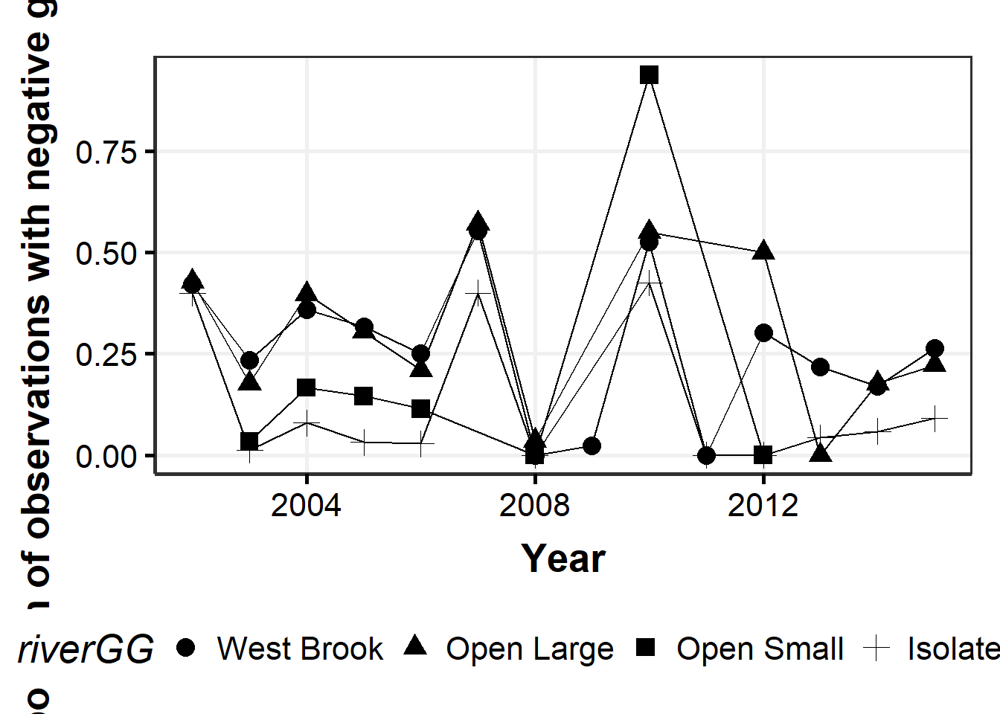
Trends across years
Code
ggplot(propNegSRsN |>filter(n >15, year >2001), aes(year, propNeg, color = riverGG)) +geom_point(aes(size = n)) +geom_smooth(method ="lm", se=FALSE) +labs(x ="Year", y ="Proportion of observations with negative growth in mass") +scale_color_discrete() +theme_publication() +facet_grid(seasonGG~speciesGG)
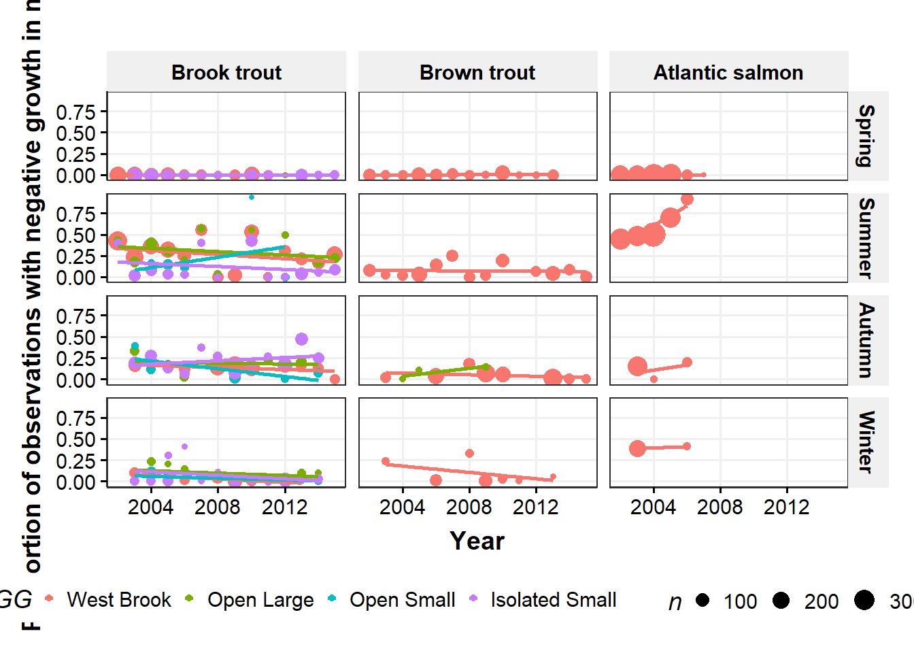
Code
# RegressionpropNegYear =lm(propNeg~year*riverGG, data = propNegSRsN |>filter(n >15, year >2001, seasonGG =="Summer", speciesGG =="Brook trout"))summary(propNegYear)
Call:
lm(formula = propNeg ~ year * riverGG, data = filter(propNegSRsN,
n > 15, year > 2001, seasonGG == "Summer", speciesGG == "Brook trout"))
Residuals:
Min 1Q Median 3Q Max
-0.35591 -0.11275 -0.02433 0.07847 0.64231
Coefficients:
Estimate Std. Error t value Pr(>|t|)
(Intercept) 2.739e-01 1.784e+01 0.015 0.988
year -2.120e-05 8.887e-03 -0.002 0.998
riverGG.L -2.231e+01 2.964e+01 -0.753 0.456
riverGG.Q 4.160e+01 3.568e+01 1.166 0.251
riverGG.C 5.250e+01 4.084e+01 1.285 0.206
year:riverGG.L 1.106e-02 1.476e-02 0.749 0.458
year:riverGG.Q -2.075e-02 1.777e-02 -1.167 0.250
year:riverGG.C -2.614e-02 2.035e-02 -1.285 0.207
Residual standard error: 0.2096 on 38 degrees of freedom
Multiple R-squared: 0.1758, Adjusted R-squared: 0.02398
F-statistic: 1.158 on 7 and 38 DF, p-value: 0.3493
Code
anova(propNegYear)
Analysis of Variance Table
Response: propNeg
Df Sum Sq Mean Sq F value Pr(>F)
year 1 0.03074 0.030745 0.6995 0.4082
riverGG 3 0.22715 0.075716 1.7228 0.1786
year:riverGG 3 0.09834 0.032780 0.7458 0.5315
Residuals 38 1.67007 0.043949
Code
propNegYearBNT =lm(propNeg~year, data = propNegSRsN |>filter(n >15, year >2001, seasonGG =="Summer", speciesGG =="Brown trout", riverGG =="West Brook"))summary(propNegYearBNT)
Call:
lm(formula = propNeg ~ year, data = filter(propNegSRsN, n > 15,
year > 2001, seasonGG == "Summer", speciesGG == "Brown trout",
riverGG == "West Brook"))
Residuals:
Min 1Q Median 3Q Max
-0.07402 -0.05541 -0.02584 0.01809 0.17197
Coefficients:
Estimate Std. Error t value Pr(>|t|)
(Intercept) 2.214267 10.863046 0.204 0.842
year -0.001066 0.005409 -0.197 0.847
Residual standard error: 0.08037 on 11 degrees of freedom
Multiple R-squared: 0.003518, Adjusted R-squared: -0.08707
F-statistic: 0.03883 on 1 and 11 DF, p-value: 0.8474
Code
anova(propNegYearBNT)
Analysis of Variance Table
Response: propNeg
Df Sum Sq Mean Sq F value Pr(>F)
year 1 0.000251 0.0002508 0.0388 0.8474
Residuals 11 0.071051 0.0064592
Code
propNegYearATS =lm(propNeg~year, data = propNegSRsN |>filter(n >15, year >2001, seasonGG =="Summer", speciesGG =="Atlantic salmon", riverGG =="West Brook"))summary(propNegYearBNT)
Call:
lm(formula = propNeg ~ year, data = filter(propNegSRsN, n > 15,
year > 2001, seasonGG == "Summer", speciesGG == "Brown trout",
riverGG == "West Brook"))
Residuals:
Min 1Q Median 3Q Max
-0.07402 -0.05541 -0.02584 0.01809 0.17197
Coefficients:
Estimate Std. Error t value Pr(>|t|)
(Intercept) 2.214267 10.863046 0.204 0.842
year -0.001066 0.005409 -0.197 0.847
Residual standard error: 0.08037 on 11 degrees of freedom
Multiple R-squared: 0.003518, Adjusted R-squared: -0.08707
F-statistic: 0.03883 on 1 and 11 DF, p-value: 0.8474
Code
anova(propNegYearBNT)
Analysis of Variance Table
Response: propNeg
Df Sum Sq Mean Sq F value Pr(>F)
year 1 0.000251 0.0002508 0.0388 0.8474
Residuals 11 0.071051 0.0064592
18.6 Negative growth by individual
Plot growth negative/positive for individual fish that lost mass. Order the individuals on the y-axis by proportion of observations that were negative.
[17:38:23] WARNING: src/learner.cc:553:
If you are loading a serialized model (like pickle in Python, RDS in R) generated by
older XGBoost, please export the model by calling `Booster.save_model` from that version
first, then load it back in current version. See:
https://xgboost.readthedocs.io/en/latest/tutorials/saving_model.html
for more details about differences between saving model and serializing.
####################################################################s_propNegBKT <-hstats(propNegBKT$xgb, v = propNegBKT$new_vars, X = propNegBKT$features_train)
### Interaction plots ##################################################################plot(partial_dep(propNegBKT$xgb, v ="mT", X = propNegBKT$features_train, BY ="mF_log10")) +geom_smooth(aes(color = mF_log10), se =FALSE)
Code
plot(partial_dep(propNegBKT$xgb, v ="mF_log10", X = propNegBKT$features_train, BY ="mT")) +geom_smooth(aes(color = mT), se =FALSE)
Code
plot(partial_dep(propNegBKT$xgb, v ="mF_log10", X = propNegBKT$features_train, BY =c("nInd"))) +geom_smooth(aes(color = nInd), se =FALSE)
[12:44:03] WARNING: src/learner.cc:553:
If you are loading a serialized model (like pickle in Python, RDS in R) generated by
older XGBoost, please export the model by calling `Booster.save_model` from that version
first, then load it back in current version. See:
https://xgboost.readthedocs.io/en/latest/tutorials/saving_model.html
for more details about differences between saving model and serializing.
### Interaction plots ##################################################################plot(partial_dep(propNegBNT$xgb, v ="mT", X = propNegBNT$features_train, BY ="mF_log10")) +geom_smooth(aes(color = mF_log10), se =FALSE)
Code
plot(partial_dep(propNegBNT$xgb, v ="mF_log10", X = propNegBNT$features_train, BY ="mT")) +geom_smooth(aes(color = mT), se =FALSE)
Code
plot(partial_dep(propNegBNT$xgb, v ="mF_log10", X = propNegBNT$features_train, BY =c("nInd"))) +geom_smooth(aes(color = nInd), se =FALSE)
[13:40:59] WARNING: src/learner.cc:553:
If you are loading a serialized model (like pickle in Python, RDS in R) generated by
older XGBoost, please export the model by calling `Booster.save_model` from that version
first, then load it back in current version. See:
https://xgboost.readthedocs.io/en/latest/tutorials/saving_model.html
for more details about differences between saving model and serializing.
### Interaction plots ##################################################################plot(partial_dep(propNegATS$xgb, v ="mT", X = propNegATS$features_train, BY ="mF_log10")) +geom_smooth(aes(color = mF_log10), se =FALSE)
Code
plot(partial_dep(propNegATS$xgb, v ="mF_log10", X = propNegATS$features_train, BY ="mT")) +geom_smooth(aes(color = mT), se =FALSE)
Code
plot(partial_dep(propNegATS$xgb, v ="mF_log10", X = propNegATS$features_train, BY =c("nInd"))) +geom_smooth(aes(color = nInd), se =FALSE)
18.10.4 Yearly temperature/flow cycles of daily data
Code
plotMerged <-function(d, r, minYear =2000, maxYear =2017){ggplot(d |>filter(riverGG == r, year %in%c(minYear:maxYear)), aes(temperature, log10(flowByRiver), color = seasonGG, group = seasonGG)) +geom_point() +geom_smooth(se =FALSE) +#geom_line() +labs(x ="Temperature (C)", y ="log10 of Flow") +scale_color_discrete() +ggtitle(r) +theme_publication() +facet_wrap(~year, scales ='free')}# this plots f/t for all three species - good for filling in gaps
Compare number of fish not seen again or seen again after each growth interval for fish that gained weight or lost weight. Plot average ratios for numbers not seen/seen again for fish that lost or gained weight for species, river and season.
18.11.1.1 By age only, not year
Code
# grouped by agenegGr_seenNotSeenAgeBothCD = cd |>mutate(age = year - cohort) |>addGG() |># filter(samplesBeforeLast > 0) |>group_by(speciesGG, riverGG, seasonGG, lastInterval = maxSample == sampleNumber +1, age, isYOY) |>summarize(meanGR =mean(grWeight, na.rm =TRUE),n =n() ) |>filter(n >5)negGr_seenNotSeenAgeBothCD_wide <- negGr_seenNotSeenAgeBothCD |>ungroup() |>select(-meanGR) |>spread(lastInterval, n, fill =0) |>mutate(ratio =`TRUE`/`FALSE`, propNotSeenAgain =`TRUE`/(`FALSE`+`TRUE`),#gainedLost = ifelse(negGrowth, "Lost", "Gained"),growthYear =ifelse(isYOY, "0/1", "1+"),n =`FALSE`+`TRUE` )ggplot(negGr_seenNotSeenAgeBothCD_wide |>filter(speciesGG =="Brook trout", age %in%c(0,1,2), #seasonGG %in% c("Summer", "Autumn") ), aes(age, propNotSeenAgain)) +geom_col(position ="dodge") +#geom_hline(yintercept = 1, linetype = "dashed") +geom_text(aes(label = n), vjust =0, nudge_y =+0.075, check_overlap =TRUE, size =4) +labs(y ="Number of fish not seen again / number of fish seen again", x ="Age") +theme_publication(base_size =18) +facet_grid(seasonGG~riverGG)
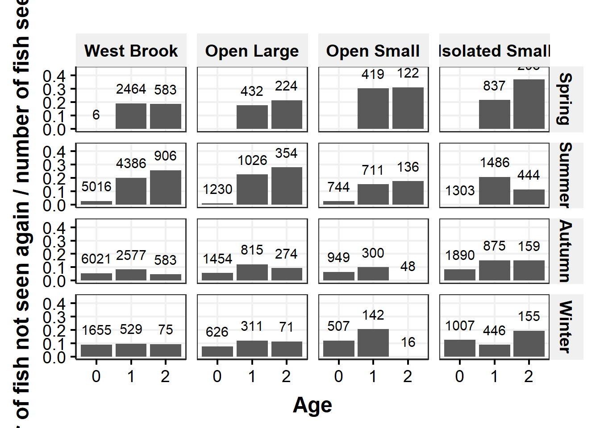
Code
#Not grouped by age/isYOYnegGr_seenNotSeenAgeBothNoAgeCD = cd |>mutate(age = year - cohort) |>addGG() |># filter(samplesBeforeLast > 0) |>group_by(speciesGG, riverGG, seasonGG, lastInterval = maxSample == sampleNumber +1) |>summarize(meanGR =mean(grWeight, na.rm =TRUE),n =n() ) |>filter(n >5)negGr_seenNotSeenAgeBothNoAgeCD_wide <- negGr_seenNotSeenAgeBothNoAgeCD |>ungroup() |>select(-meanGR) |>spread(lastInterval, n, fill =0) |>mutate(ratio =`TRUE`/`FALSE`, n =`FALSE`+`TRUE`,propNotSeenAgain =`TRUE`/n,#gainedLost = ifelse(negGrowth, "Lost", "Gained"),#growthYear = ifelse(isYOY, "0/1", "1+"), )ggplot(negGr_seenNotSeenAgeBothNoAgeCD_wide |>filter(#speciesGG == "Brook trout", #seasonGG %in% c("Summer", "Autumn") ), aes(seasonGG, propNotSeenAgain, group = speciesGG, fill = speciesGG)) +geom_col(position ="dodge") +#geom_hline(yintercept = 1, linetype = "dashed") +geom_text(aes(label = n), vjust =0, nudge_y =+0.075, check_overlap =TRUE, size =4) +labs(y ="Number of fish not seen again / number of fish seen again", x ="Age") +theme_publication(base_size =18) +scale_fill_grey() +facet_wrap(~riverGG)
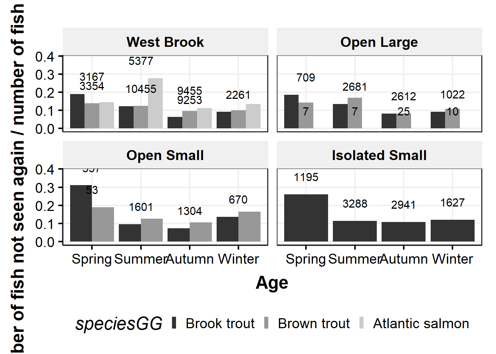
Code
ggplot(negGr_seenNotSeenAgeBothNoAgeCD_wide |>filter(#speciesGG == "Brook trout", #seasonGG %in% c("Summer", "Autumn") ), aes(speciesGG, propNotSeenAgain, group = riverGG, fill = riverGG)) +geom_col(position ="dodge") +#geom_hline(yintercept = 1, linetype = "dashed") +geom_text(aes(label = n), vjust =0, nudge_y =+0.075, check_overlap =TRUE, size =4) +labs(y ="Number of fish not seen again / number of fish seen again", x ="Age") +theme_publication(base_size =18) +scale_fill_grey() +facet_grid(seasonGG~speciesGG)
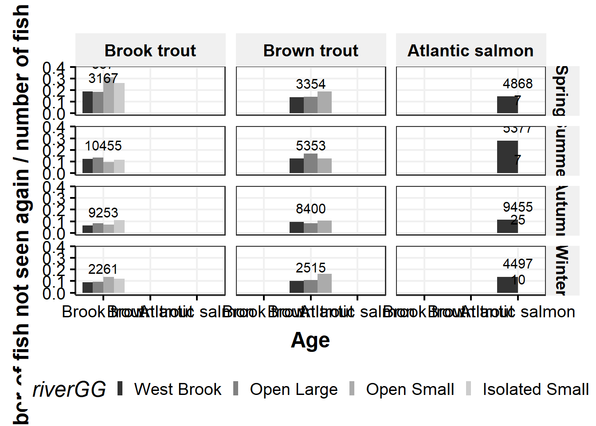
By negGrowth
Code
negGr_seenNotSeenAgeCD = cd |>mutate(age = year - cohort) |>addGG() |># filter(samplesBeforeLast > 0) |>group_by(speciesGG, riverGG, seasonGG, lastInterval = maxSample == sampleNumber +1, negGrowth = grWeight <0, age, isYOY) |>summarize(meanGR =mean(grWeight, na.rm =TRUE),n =n() ) |>filter(!is.na(negGrowth), n >5)negGr_seenNotSeenAgeCD_wide <- negGr_seenNotSeenAgeCD |>ungroup() |>select(-meanGR) |>spread(lastInterval, n, fill =0) |>mutate(ratio =`TRUE`/`FALSE`, propNotSeenAgain =`TRUE`/(`FALSE`+`TRUE`),gainedLost =ifelse(negGrowth, "Lost", "Gained"),growthYear =ifelse(isYOY, "0/1", "1+"),n =`FALSE`+`TRUE` )# by growthYearggplot(negGr_seenNotSeenAgeCD_wide |>filter(speciesGG =="Brook trout", age %in%c(0,1,2), seasonGG %in%c("Summer", "Autumn")), aes(gainedLost, ratio)) +geom_col(position ="dodge") +geom_hline(yintercept =1, linetype ="dashed") +geom_text(aes(label = n), vjust =0, nudge_y =+0.075, check_overlap =TRUE, size =4) +labs(y ="Number of fish not seen again / number of fish seen again", x ="Growth in mass") +theme_publication(base_size =18) +facet_grid(seasonGG~riverGG + growthYear)
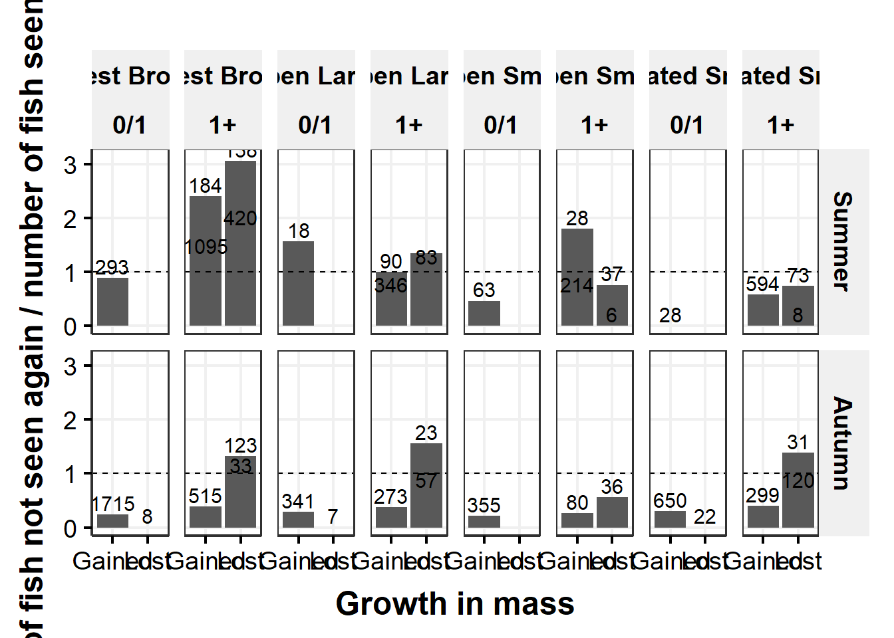
Code
ggplot(negGr_seenNotSeenAgeCD_wide |>filter(riverGG =="West Brook", age %in%c(0,1,2), seasonGG %in%c("Summer", "Autumn")), aes(gainedLost, ratio)) +geom_col(position ="dodge") +geom_hline(yintercept =1, linetype ="dashed") +geom_text(aes(label = n), vjust =0, nudge_y =+0.075, check_overlap =TRUE, size =4) +labs(y ="Number of fish not seen again / number of fish seen again", x ="Growth in mass") +theme_publication(base_size =18) +facet_grid(seasonGG~speciesGG + growthYear)
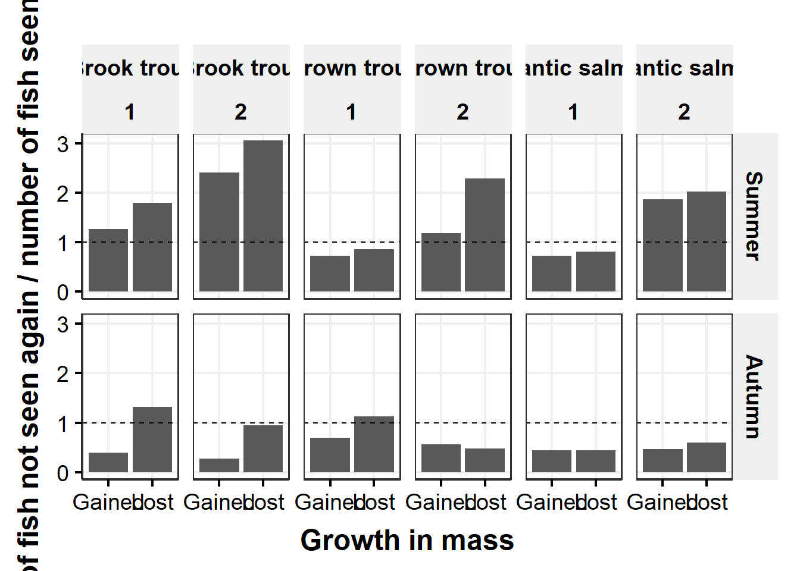
Code
## for the MS - by age (1,2)ggplot(negGr_seenNotSeenAgeCD_wide |>filter(speciesGG =="Brook trout", age %in%c(0,1,2), seasonGG %in%c("Summer", "Autumn")), aes(gainedLost, ratio)) +geom_col(position ="dodge") +geom_hline(yintercept =1, linetype ="dashed") +geom_text(aes(label = n), vjust =0, nudge_y =+0.075, check_overlap =TRUE, size =4) +labs(y ="Number of fish not seen again / number of fish seen again", x ="Growth in mass") +theme_publication(base_size =18) +facet_grid(seasonGG~riverGG + age)
Code
ggplot(negGr_seenNotSeenAgeCD_wide |>filter(speciesGG =="Brook trout", age %in%c(1,2), seasonGG %in%c("Summer", "Autumn")), aes(gainedLost, ratio)) +geom_col(position ="dodge") +geom_hline(yintercept =1, linetype ="dashed") +geom_text(aes(label = n), vjust =0, nudge_y =+0.075, check_overlap =TRUE, size =4) +labs(y ="Number of fish not seen again / number of fish seen again", x ="Growth in mass") +theme_publication(base_size =18) +facet_grid(seasonGG~riverGG + age)
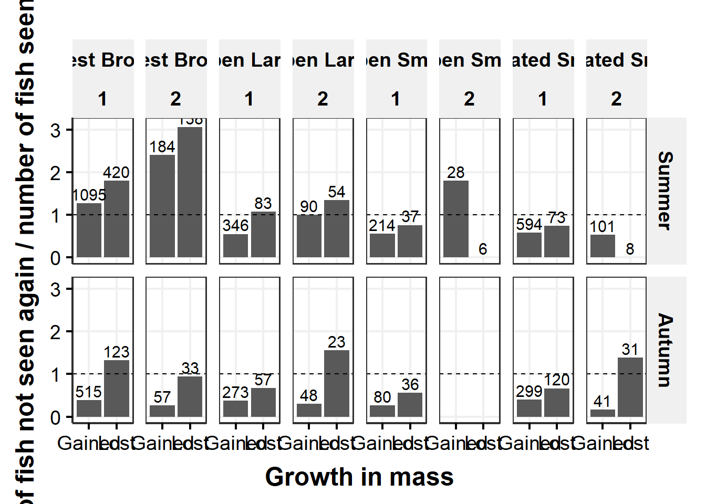
Code
### by species for WB### ggplot(negGr_seenNotSeenAgeCD_wide |>filter(age %in%c(1,2), seasonGG %in%c("Summer","Autumn"), riverGG =="West Brook"), aes(gainedLost, ratio)) +geom_col(position ="dodge") +geom_hline(yintercept =1, linetype ="dashed") +geom_text(aes(label = n), vjust =0, nudge_y =+0.075, check_overlap =TRUE, size =4) +labs(y ="Number of fish not seen again / number of fish seen again", x ="Growth in mass") +theme_publication(base_size =18) +facet_grid(seasonGG~speciesGG + age)
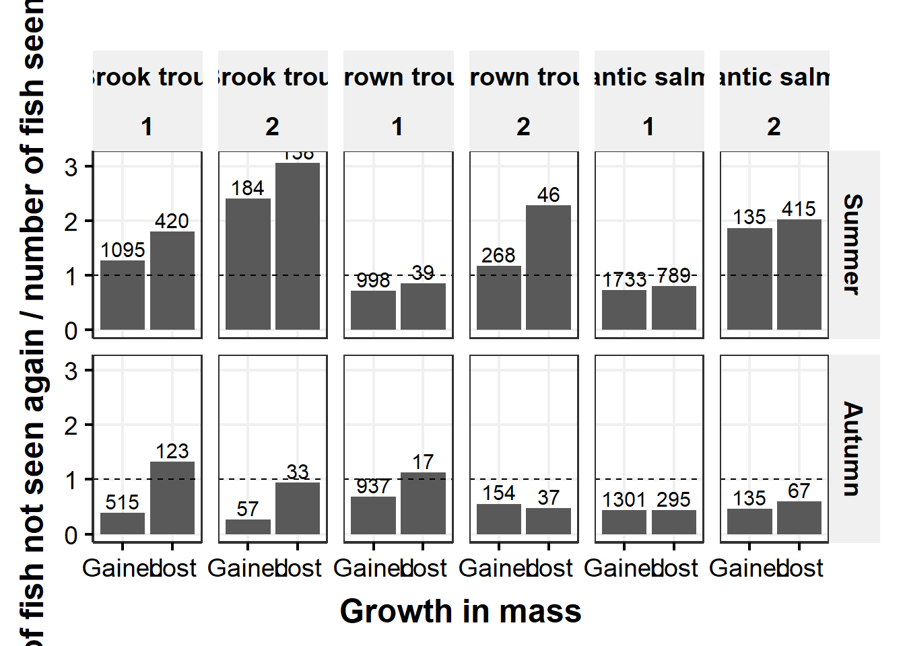
Code
ggplot(negGr_seenNotSeenAgeCD_wide |>filter(age %in%c(0,1,2), seasonGG %in%c("Summer","Autumn"), riverGG =="West Brook"), aes(gainedLost, ratio)) +geom_col(position ="dodge") +geom_hline(yintercept =1, linetype ="dashed") +geom_text(aes(label = n), vjust =0, nudge_y =+0.075, check_overlap =TRUE, size =4) +labs(y ="Number of fish not seen again / number of fish seen again", x ="Growth in mass") +theme_publication(base_size =18) +facet_grid(seasonGG~speciesGG + age)
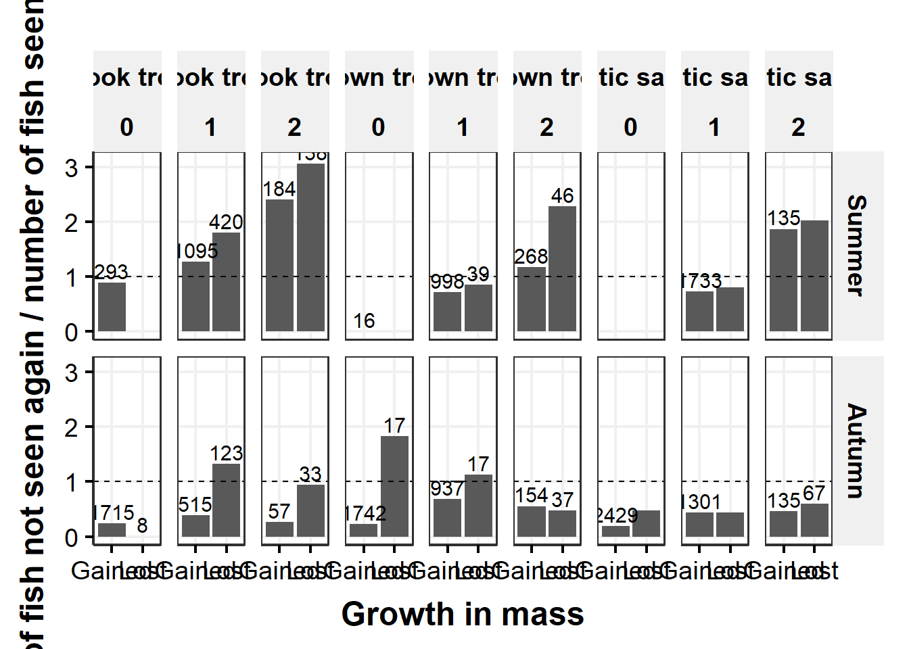
Not grouping by age
Code
negGr_seenNotSeenCD = cd |>mutate(age = year - cohort) |>filter(age <3) |>addGG() |># filter(samplesBeforeLast > 0) |>group_by(speciesGG, riverGG, seasonGG, lastInterval = maxSample == sampleNumber +1, negGrowth = grWeight <0) |>summarize(meanGR =mean(grWeight, na.rm =TRUE),n =n() ) |>filter(!is.na(negGrowth), n >5)negGr_seenNotSeenCD_wide <- negGr_seenNotSeenCD |>ungroup() |> dplyr::select(-meanGR) |>spread(lastInterval, n, fill =0) |>mutate(ratio =`TRUE`/`FALSE`, propNotSeenAgain =`TRUE`/(`FALSE`+`TRUE`),gainedLost =ifelse(negGrowth, "Negative", "Positive"),#growthYear = ifelse(isYOY, "0/1", "1+"),n =`FALSE`+`TRUE` )# Figure 7 in the MSggplot(negGr_seenNotSeenCD_wide |>filter(speciesGG =="Brook trout", seasonGG %in%c("Summer", "Autumn")), aes(gainedLost, ratio)) +geom_col(position ="dodge") +geom_hline(yintercept =1, linetype ="dashed") +geom_text(aes(label = n), vjust =0, nudge_y =+0.075, check_overlap =TRUE, size =4) +labs(y ="Number of fish not seen again / number of fish seen again", x ="Growth in mass") +theme_publication(base_size =18) +facet_grid(seasonGG~riverGG )
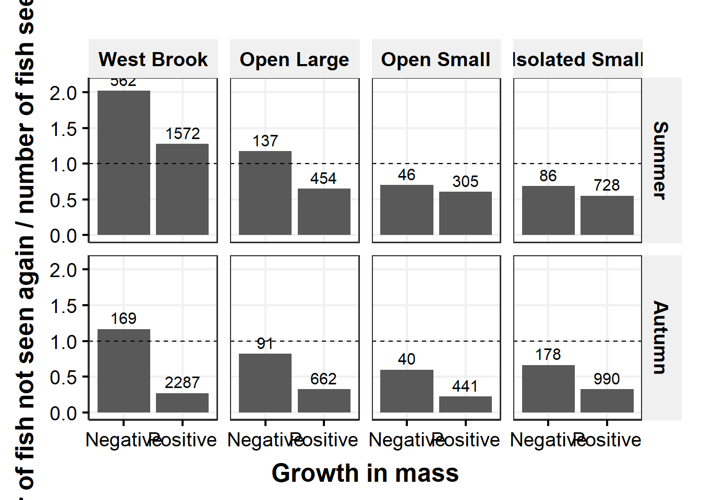
Code
ggplot(negGr_seenNotSeenCD_wide |>filter(seasonGG %in%c("Summer","Autumn"), riverGG =="West Brook"), aes(gainedLost, ratio)) +geom_col(position ="dodge") +geom_hline(yintercept =1, linetype ="dashed") +geom_text(aes(label = n), vjust =0, nudge_y =+0.075, check_overlap =TRUE, size =4) +labs(y ="Number of fish not seen again / number of fish seen again", x ="Growth in mass") +theme_publication(base_size =18) +facet_grid(seasonGG~speciesGG)
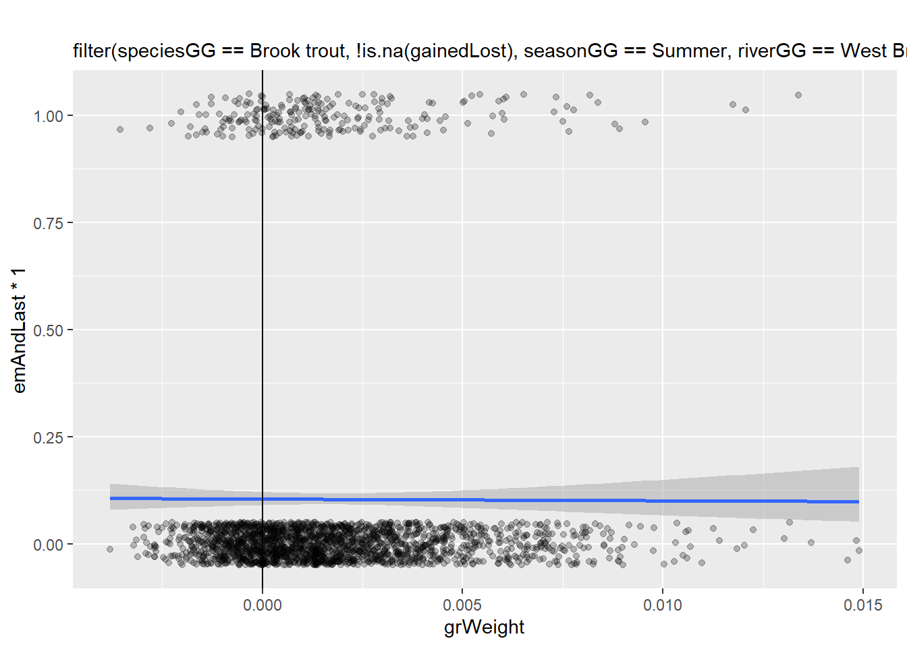
18.11.1.2 By age only, not year for fish LENGTH
Code
negGrLen_seenNotSeenAgeCD = cd |>mutate(age = year - cohort) |>addGG() |># filter(samplesBeforeLast > 0) |>group_by(speciesGG, riverGG, seasonGG, lastInterval = maxSample == sampleNumber +1, negGrowth = grLength <0, age) |>summarize(meanGR =mean(grWeight, na.rm =TRUE),n =n() ) |>filter(!is.na(negGrowth), n >5)negGrLen_seenNotSeenAgeCD_wide <- negGrLen_seenNotSeenAgeCD |>ungroup() |>select(-meanGR) |>spread(lastInterval, n, fill =0) |>mutate(ratio =`TRUE`/`FALSE`, gainedLost =ifelse(negGrowth, "Lost", "Gained") )ggplot(negGrLen_seenNotSeenAgeCD_wide |>filter(speciesGG =="Brook trout", age %in%c(1,2), seasonGG %in%c("Summer", "Autumn")), aes(gainedLost, ratio)) +geom_col(position ="dodge") +#geom_errorbar(aes(ymin = ymin, ymax = ymax), position = position_dodge(0.9), width = 0.2) +geom_hline(yintercept =1, linetype ="dashed") +#labs(y = "Ratio of fish not seen again to fish seen again", x = "Growth in mass") +labs(y ="Number of fish not seen again / number of fish seen again", x ="Growth in mass") +#ggtitle("Brook trout") +theme_publication(base_size =18) +facet_grid(seasonGG~riverGG + age)
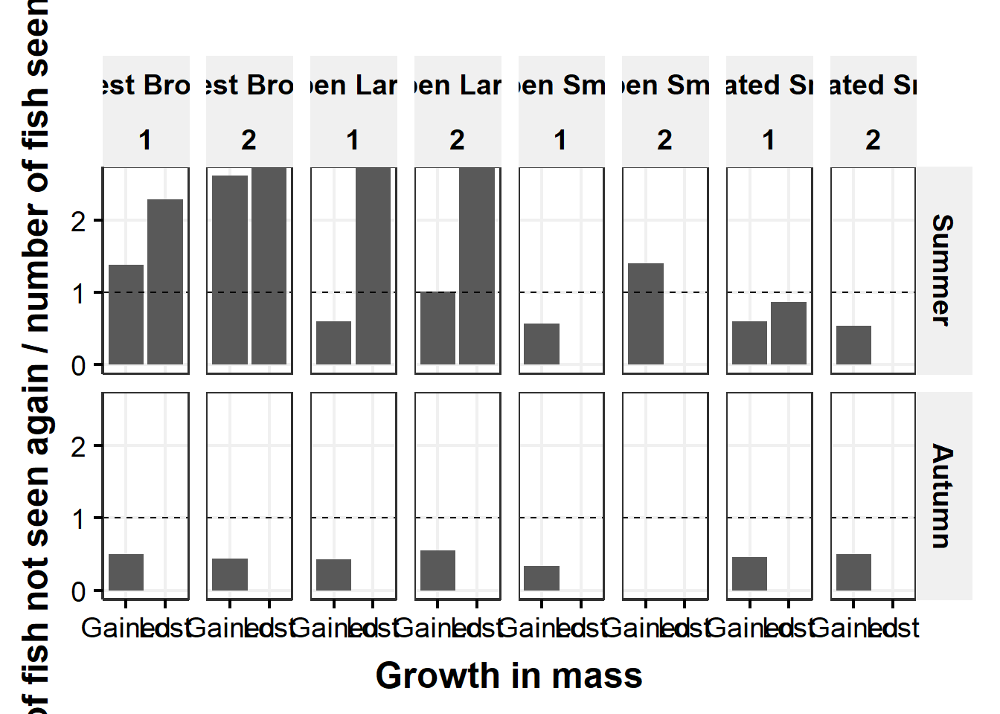
Code
ggplot(negGrLen_seenNotSeenAgeCD_wide |>filter(riverGG =="West Brook", age %in%c(1,2), seasonGG %in%c("Summer", "Autumn")), aes(gainedLost, ratio)) +geom_col(position ="dodge") +#geom_errorbar(aes(ymin = ymin, ymax = ymax), position = position_dodge(0.9), width = 0.2) +geom_hline(yintercept =1, linetype ="dashed") +#labs(y = "Ratio of fish not seen again to fish seen again", x = "Growth in mass") +labs(y ="Number of fish not seen again / number of fish seen again", x ="Growth in mass") +#ggtitle("Brook trout") +theme_publication(base_size =18) +facet_grid(seasonGG~speciesGG + age)
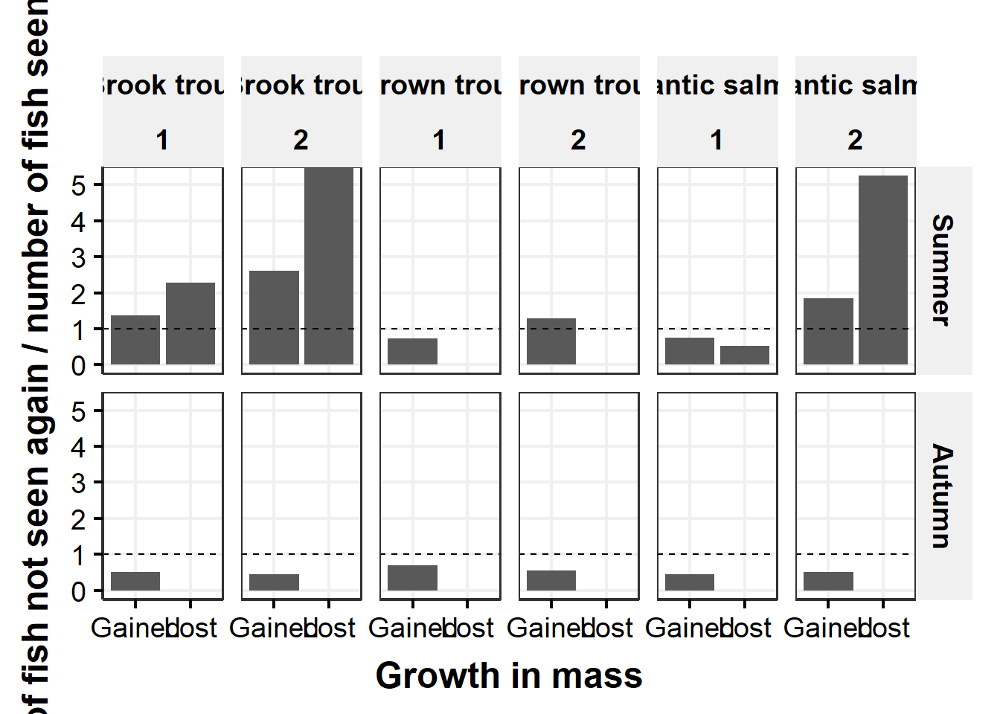
By year - cd which includes all observations not just consecutive captures
Code
#cd |> mutate(lastInterval = maxSample == sampleNumber + 1) |> filter(nPerInd >7) |> select(tag, sampleNumber, maxSample, observedWeight, grWeight, lastInterval) negGr_seenNotSeenYearCD = cd |>addGG() |># filter(samplesBeforeLast > 0) |>group_by(speciesGG, riverGG, seasonGG, lastInterval = maxSample == sampleNumber +1, negGrowth = grWeight <0, year) |>summarize(meanGR =mean(grWeight, na.rm =TRUE),n =n() ) |>filter(!is.na(negGrowth), n >5)negGr_seenNotSeenYearCD_wide <- negGr_seenNotSeenYearCD |>ungroup() |>select(-meanGR) |>spread(lastInterval, n, fill =0) |>mutate(ratio =`TRUE`/`FALSE`)ggplot(negGr_seenNotSeenYearCD_wide |>filter(!is.na(negGrowth), speciesGG =="Brook trout", seasonGG =="Summer"), aes(year, `FALSE`, color = negGrowth)) +geom_point(size =5) +geom_line() +geom_point(aes(year, `TRUE`, color = negGrowth), shape =2, size =5) +geom_line(aes(year, `TRUE`, color = negGrowth)) +scale_y_continuous("Number of fish") +scale_x_continuous("Year") +theme_publication(base_size =14) +ggtitle("Brook trout", subtitle ="Number of brook trout seen again (triangle) and number of fish not seen again (filled circle) in summer") +facet_wrap(~riverGG)
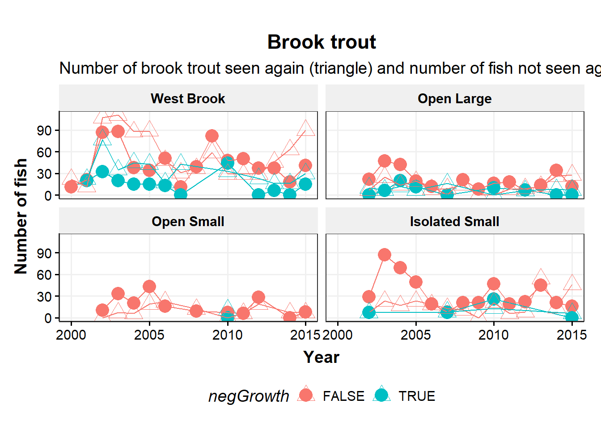
Code
ggplot(negGr_seenNotSeenYearCD_wide |>filter(!is.na(negGrowth), speciesGG =="Brook trout", seasonGG =="Autumn"), aes(year, `FALSE`, color = negGrowth)) +geom_point(size =5) +geom_line() +geom_point(aes(year, `TRUE`, color = negGrowth), shape =2, size =5) +geom_line(aes(year, `TRUE`, color = negGrowth)) +scale_y_continuous("Number of fish") +scale_x_continuous("Year") +theme_publication(base_size =14) +ggtitle("Brook trout", subtitle ="Number of brook trout seen again (triangle) and number of fish not seen again (filled circle) in autumn") +facet_wrap(~riverGG)
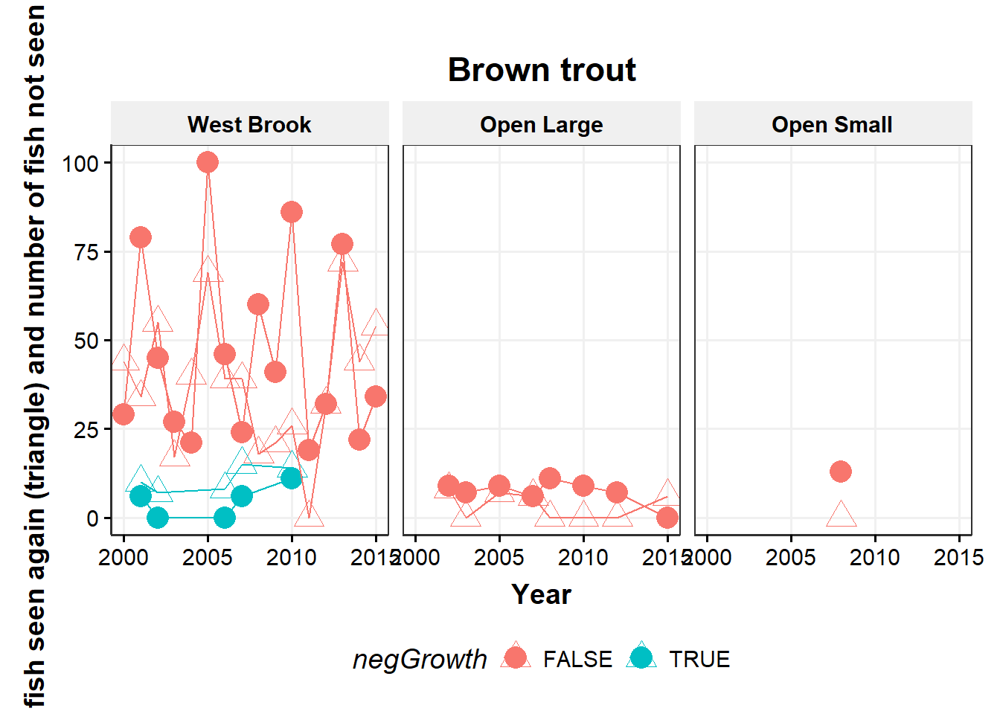
Code
ggplot(negGr_seenNotSeenYearCD_wide |>filter(!is.na(negGrowth), speciesGG =="Brown trout", seasonGG =="Summer"), aes(year, `FALSE`, color = negGrowth)) +geom_point(size =5) +geom_line() +geom_point(aes(year, `TRUE`, color = negGrowth), shape =2, size =5) +geom_line(aes(year, `TRUE`, color = negGrowth)) +scale_y_continuous("Number of fish") +scale_x_continuous("Year") +theme_publication(base_size =14) +ggtitle("Brown trout", subtitle ="Number of brown trout seen again (triangle) and number of fish not seen again (filled circle) in summer") +facet_wrap(~riverGG)
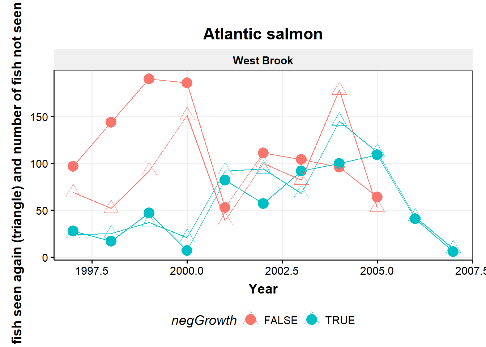
Code
ggplot(negGr_seenNotSeenYearCD_wide |>filter(!is.na(negGrowth), speciesGG =="Brown trout", seasonGG =="Autumn"), aes(year, `FALSE`, color = negGrowth)) +geom_point(size =5) +geom_line() +geom_point(aes(year, `TRUE`, color = negGrowth), shape =2, size =5) +geom_line(aes(year, `TRUE`, color = negGrowth)) +scale_y_continuous("Number of fish") +scale_x_continuous("Year") +theme_publication(base_size =14) +ggtitle("Brown trout", subtitle ="Number of brown trout seen again (triangle) and number of fish not seen again (filled circle) in autumn") +facet_wrap(~riverGG)
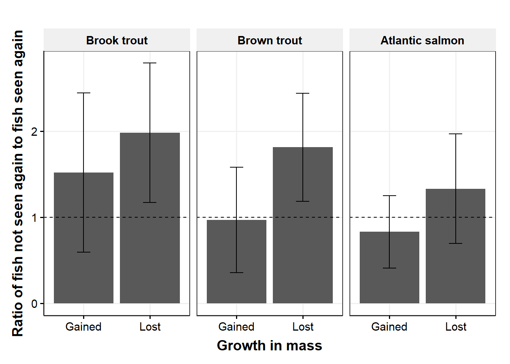
Code
ggplot(negGr_seenNotSeenYearCD_wide |>filter(!is.na(negGrowth), speciesGG =="Atlantic salmon", seasonGG =="Summer"), aes(year, `FALSE`, color = negGrowth)) +geom_point(size =5) +geom_line() +geom_point(aes(year, `TRUE`, color = negGrowth), shape =2, size =5) +geom_line(aes(year, `TRUE`, color = negGrowth)) +scale_y_continuous("Number of fish") +scale_x_continuous("Year") +theme_publication(base_size =14) +ggtitle("Atlantic salmon", subtitle ="Number of salmon seen again (triangle) and number of fish not seen again (filled circle) in summer") +facet_wrap(~riverGG)
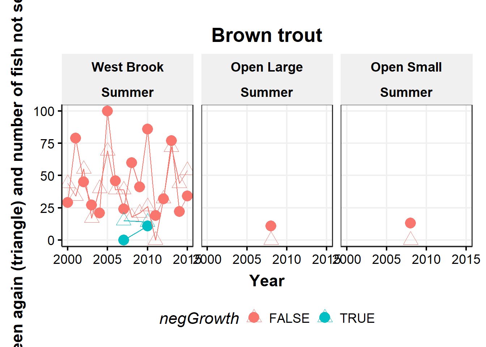
Code
ggplot(negGr_seenNotSeenYearCD_wide |>filter(!is.na(negGrowth), speciesGG =="Atlantic salmon", seasonGG =="Autumn"), aes(year, `FALSE`, color = negGrowth)) +geom_point(size =5) +geom_line() +geom_point(aes(year, `TRUE`, color = negGrowth), shape =2, size =5) +geom_line(aes(year, `TRUE`, color = negGrowth)) +scale_y_continuous("Number of fish") +scale_x_continuous("Year") +theme_publication(base_size =14) +ggtitle("Atlantic salmon", subtitle ="Number of salmon seen again (triangle) and number of fish not seen again (filled circle) in autumn") +facet_wrap(~riverGG)
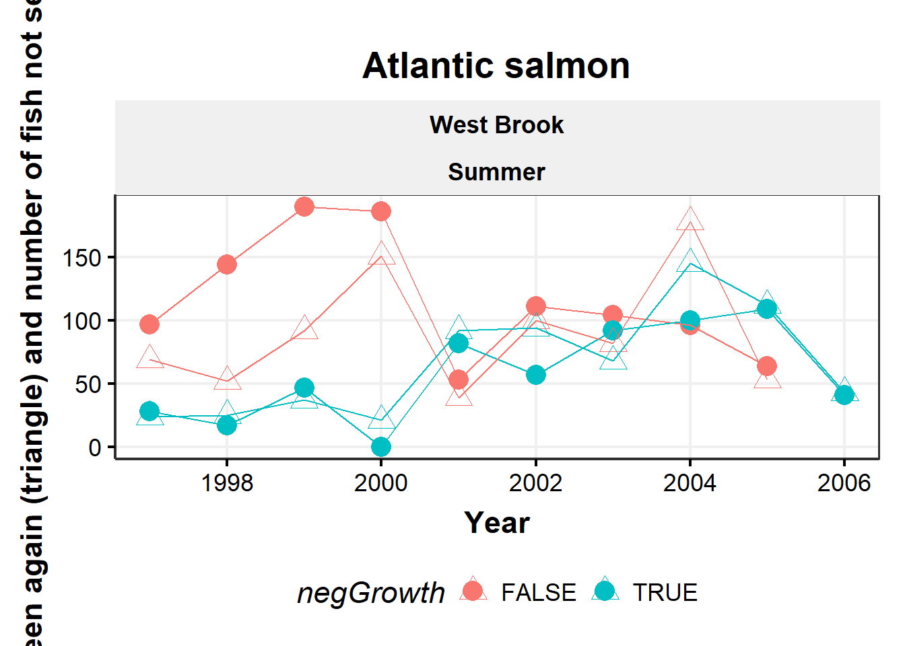
Code
############# meansnegGr_seenNotSeenYearCD_wideMeans <- negGr_seenNotSeenYearCD_wide |>filter(is.finite(ratio)) |>group_by(speciesGG, riverGG, seasonGG, negGrowth) |>summarize(meanFalse =mean(`FALSE`),meanTrue =mean(`TRUE`),meanRatio =mean(ratio),sdRatio =sd(ratio),n =n() ) |>mutate(ymax = meanRatio + sdRatio,ymin = meanRatio - sdRatio,gainedLost =ifelse(negGrowth, "Lost", "Gained") ) ggplot(negGr_seenNotSeenYearCD_wideMeans |>filter(seasonGG =="Summer", riverGG =="West Brook"), aes(gainedLost, meanRatio)) +geom_col(position ="dodge") +geom_errorbar(aes(ymin = ymin, ymax = ymax), position =position_dodge(0.9), width =0.2) +geom_hline(yintercept =1, linetype ="dashed") +labs(y ="Ratio of fish not seen again to fish seen again", x ="Growth in mass") +#ggtitle("Brook trout, summer") +theme_publication() +facet_grid(~speciesGG)
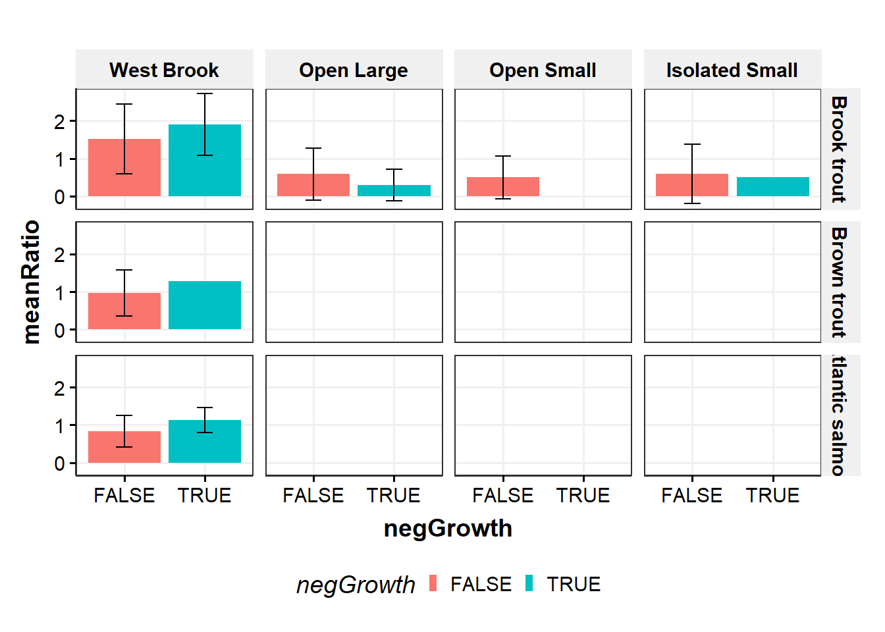
Code
ggplot(negGr_seenNotSeenYearCD_wideMeans |>filter(seasonGG =="Autumn", riverGG =="West Brook"), aes(gainedLost, meanRatio)) +geom_col(position ="dodge") +geom_errorbar(aes(ymin = ymin, ymax = ymax), position =position_dodge(0.9), width =0.2) +geom_hline(yintercept =1, linetype ="dashed") +labs(y ="Ratio of fish not seen again to fish seen again", x ="Growth in mass") +#ggtitle("Brook trout, autumn") +theme_publication() +facet_grid(~speciesGG)
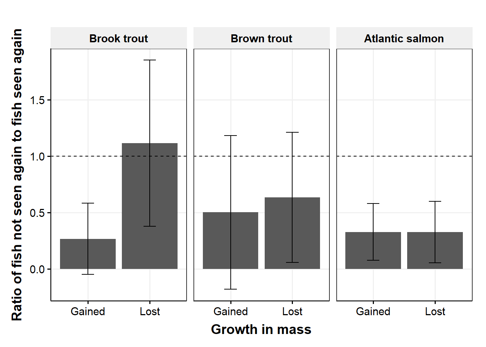
Code
ggplot(negGr_seenNotSeenYearCD_wideMeans |>filter(seasonGG %in%c("Summer","Autumn"), riverGG =="West Brook"), aes(gainedLost, meanRatio)) +geom_col(position ="dodge") +geom_errorbar(aes(ymin = ymin, ymax = ymax), position =position_dodge(0.9), width =0.2) +geom_hline(yintercept =1, linetype ="dashed") +#labs(y = "Ratio of fish not seen again to fish seen again", x = "Growth in mass") +labs(y ="Number of fish not seen again / number of fish seen again", x ="Growth in mass") +#ggtitle("Brook trout, autumn") +theme_publication(base_size =18) +facet_grid(seasonGG~speciesGG)
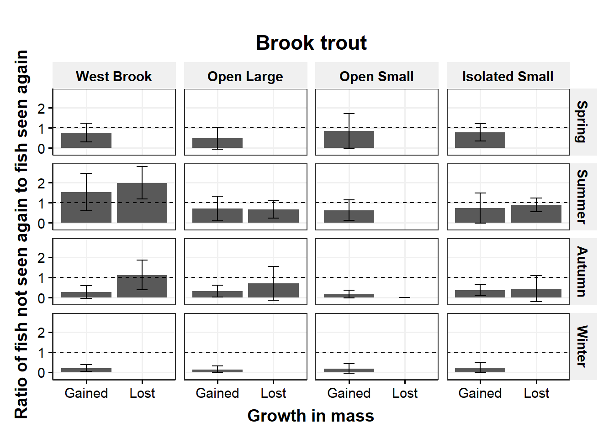
Code
#####ggplot(negGr_seenNotSeenYearCD_wideMeans |>filter(speciesGG =="Brook trout"), aes(gainedLost, meanRatio)) +geom_col(position ="dodge") +geom_errorbar(aes(ymin = ymin, ymax = ymax), position =position_dodge(0.9), width =0.2) +geom_hline(yintercept =1, linetype ="dashed") +#labs(y = "Ratio of fish not seen again to fish seen again", x = "Growth in mass") +labs(y ="Number of fish not seen again / number of fish seen again", x ="Growth in mass") +#ggtitle("Brook trout") +theme_publication(base_size =18) +facet_grid(seasonGG~riverGG)
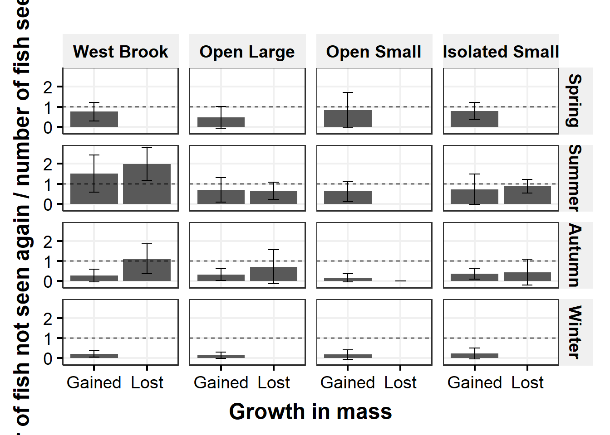
Code
# for the MS# ggplot(negGr_seenNotSeenYearCD_wideMeans |>filter(speciesGG =="Brook trout", seasonGG %in%c("Summer", "Autumn")), aes(gainedLost, meanRatio)) +geom_col(position ="dodge") +geom_errorbar(aes(ymin = ymin, ymax = ymax), position =position_dodge(0.9), width =0.2) +geom_hline(yintercept =1, linetype ="dashed") +#labs(y = "Ratio of fish not seen again to fish seen again", x = "Growth in mass") +labs(y ="Number of fish not seen again / number of fish seen again", x ="Growth in mass") +#ggtitle("Brook trout") +theme_publication(base_size =18) +facet_grid(seasonGG~riverGG)
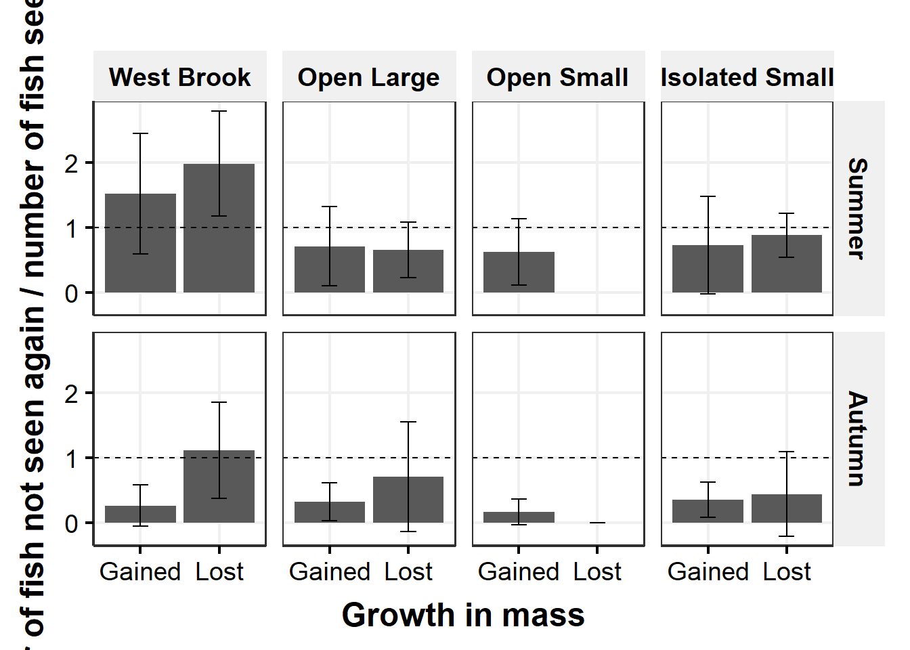
Code
ggplot(negGr_seenNotSeenYearCD_wideMeans |>filter(speciesGG =="Brown trout"), aes(gainedLost, meanRatio)) +geom_col(position ="dodge") +geom_errorbar(aes(ymin = ymin, ymax = ymax), position =position_dodge(0.9), width =0.2) +geom_hline(yintercept =1, linetype ="dashed") +labs(y ="Ratio of fish not seen again to fish seen again", x ="Growth in mass") +ggtitle("Brown trout") +theme_publication() +facet_grid(seasonGG~riverGG)
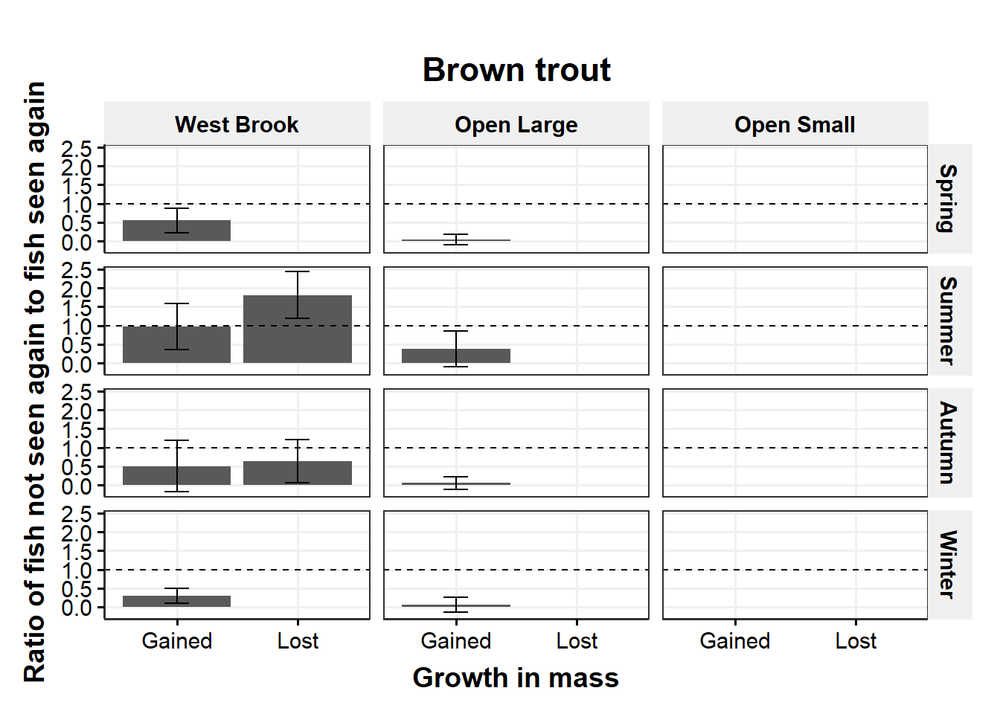
18.11.1.3 By age
Code
#cd |> mutate(lastInterval = maxSample == sampleNumber + 1) |> filter(nPerInd >7) |> select(tag, sampleNumber, maxSample, observedWeight, grWeight, lastInterval) negGr_seenNotSeenYearAgeCD = cd |>addGG() |>mutate(age = year - cohort) |># filter(samplesBeforeLast > 0) |>group_by(speciesGG, riverGG, seasonGG, lastInterval = maxSample == sampleNumber +1, negGrowth = grWeight <0, year, age) |>summarize(meanGR =mean(grWeight, na.rm =TRUE),n =n() ) |>filter(!is.na(negGrowth), n >5)negGr_seenNotSeenYearAgeCD_wide <- negGr_seenNotSeenYearAgeCD |>ungroup() |>select(-meanGR) |>spread(lastInterval, n, fill =0) |>mutate(ratio =`TRUE`/`FALSE`)ggplot(negGr_seenNotSeenYearAgeCD_wide |>filter(!is.na(negGrowth), speciesGG =="Brook trout", seasonGG =="Summer"), aes(year, `FALSE`, color = negGrowth)) +geom_point(size =5) +geom_line() +geom_point(aes(year, `TRUE`, color = negGrowth), shape =2, size =5) +geom_line(aes(year, `TRUE`, color = negGrowth)) +scale_y_continuous("Number of fish") +scale_x_continuous("Year") +theme_publication(base_size =14) +ggtitle("Brook trout", subtitle ="Number of brook trout seen again (triangle) and number of fish not seen again (filled circle) in summer") +facet_grid(age~riverGG)
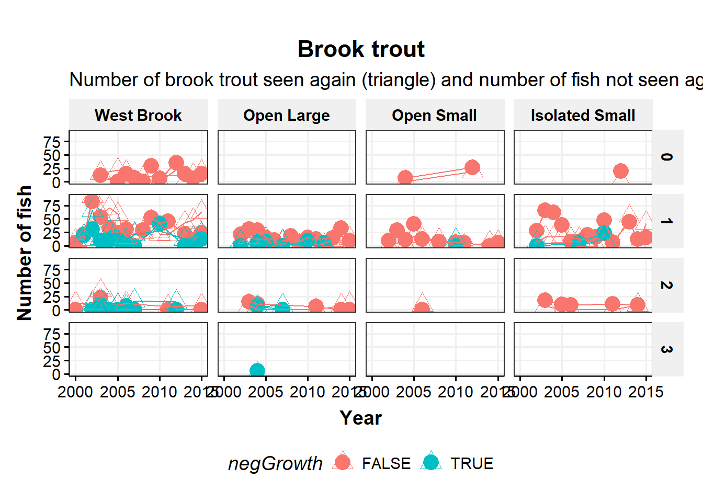
Code
ggplot(negGr_seenNotSeenYearAgeCD_wide |>filter(!is.na(negGrowth), speciesGG =="Brook trout", riverGG =="West Brook", age ==1, seasonGG =="Summer"), aes(year, `FALSE`, color = negGrowth)) +geom_point(size =5) +geom_line() +geom_point(aes(year, `TRUE`, color = negGrowth), shape =2, size =5) +geom_line(aes(year, `TRUE`, color = negGrowth)) +scale_y_continuous("Number of fish") +scale_x_continuous("Year") +theme_publication(base_size =14) +ggtitle("Brook trout, WB, Summer", subtitle ="Number of brook trout seen again (triangle) and number of fish not seen again (filled circle) in summer") +facet_grid(age~riverGG)
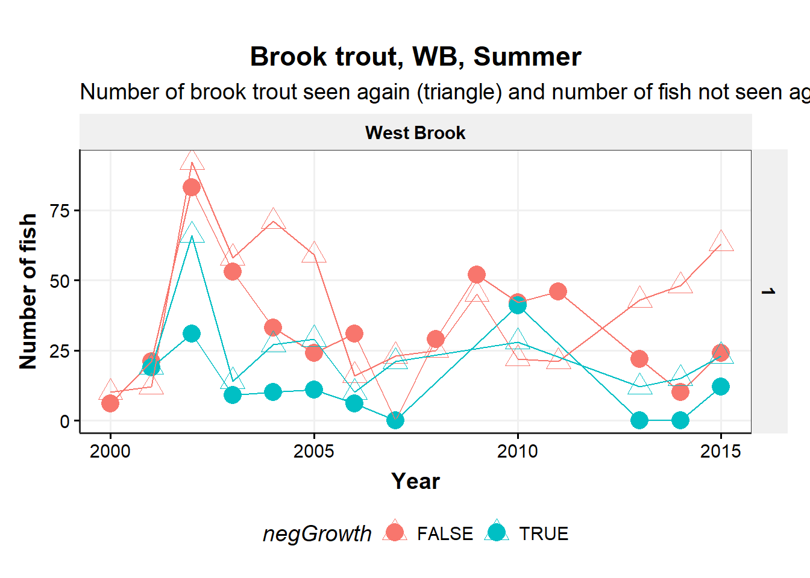
Code
ggplot(negGr_seenNotSeenYearAgeCD_wide |>filter(!is.na(negGrowth), speciesGG =="Brook trout", riverGG =="West Brook", age ==1, seasonGG =="Summer"), aes(year, ratio, color = negGrowth)) +geom_point(size =5) +geom_line() +geom_point(aes(year, ratio, color = negGrowth), shape =2, size =5) +geom_line(aes(year, ratio, color = negGrowth)) +scale_y_continuous("Ratio, not seen/seen") +scale_x_continuous("Year") +theme_publication(base_size =14) +ggtitle("Brook trout, WB, Summer", subtitle ="Number of brook trout seen again (triangle) and number of fish not seen again (filled circle) in summer") +facet_grid(age~riverGG)
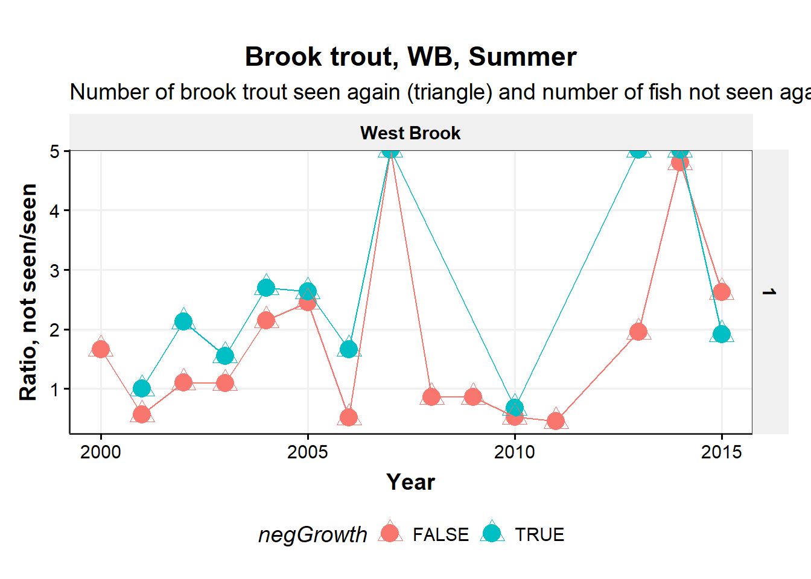
Code
ggplot(negGr_seenNotSeenYearAgeCD_wide |>filter(!is.na(negGrowth), speciesGG =="Brook trout", seasonGG =="Autumn"), aes(year, `FALSE`, color = negGrowth)) +geom_point(size =5) +geom_line() +geom_point(aes(year, `TRUE`, color = negGrowth), shape =2, size =5) +geom_line(aes(year, `TRUE`, color = negGrowth)) +scale_y_continuous("Number of fish") +scale_x_continuous("Year") +theme_publication(base_size =14) +ggtitle("Brook trout", subtitle ="Number of brook trout seen again (triangle) and number of fish not seen again (filled circle) in autumn") +facet_grid(age~riverGG)
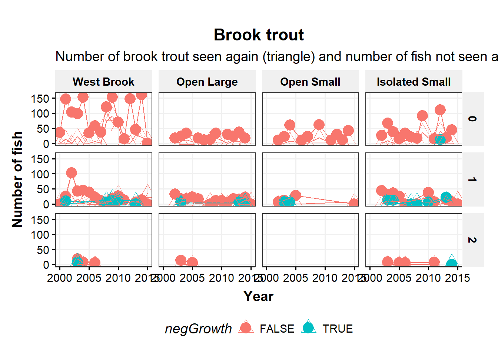
Code
ggplot(negGr_seenNotSeenYearAgeCD_wide |>filter(!is.na(negGrowth), speciesGG =="Brown trout", seasonGG =="Summer"), aes(year, `FALSE`, color = negGrowth)) +geom_point(size =5) +geom_line() +geom_point(aes(year, `TRUE`, color = negGrowth), shape =2, size =5) +geom_line(aes(year, `TRUE`, color = negGrowth)) +scale_y_continuous("Number of fish") +scale_x_continuous("Year") +theme_publication(base_size =14) +ggtitle("Brown trout", subtitle ="Number of brown trout seen again (triangle) and number of fish not seen again (filled circle) in summer") +facet_grid(age~riverGG)
Code
ggplot(negGr_seenNotSeenYearAgeCD_wide |>filter(!is.na(negGrowth), speciesGG =="Brown trout", seasonGG =="Autumn"), aes(year, `FALSE`, color = negGrowth)) +geom_point(size =5) +geom_line() +geom_point(aes(year, `TRUE`, color = negGrowth), shape =2, size =5) +geom_line(aes(year, `TRUE`, color = negGrowth)) +scale_y_continuous("Number of fish") +scale_x_continuous("Year") +theme_publication(base_size =14) +ggtitle("Brown trout", subtitle ="Number of brown trout seen again (triangle) and number of fish not seen again (filled circle) in autumn") +facet_grid(age~riverGG)
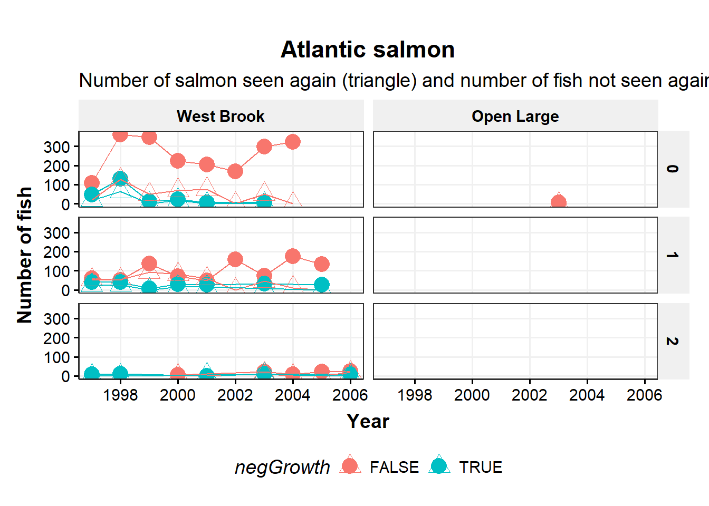
Code
ggplot(negGr_seenNotSeenYearAgeCD_wide |>filter(!is.na(negGrowth), speciesGG =="Atlantic salmon", seasonGG =="Summer"), aes(year, `FALSE`, color = negGrowth)) +geom_point(size =5) +geom_line() +geom_point(aes(year, `TRUE`, color = negGrowth), shape =2, size =5) +geom_line(aes(year, `TRUE`, color = negGrowth)) +scale_y_continuous("Number of fish") +scale_x_continuous("Year") +theme_publication(base_size =14) +ggtitle("Atlantic salmon", subtitle ="Number of salmon seen again (triangle) and number of fish not seen again (filled circle) in summer") +facet_grid(age~riverGG)
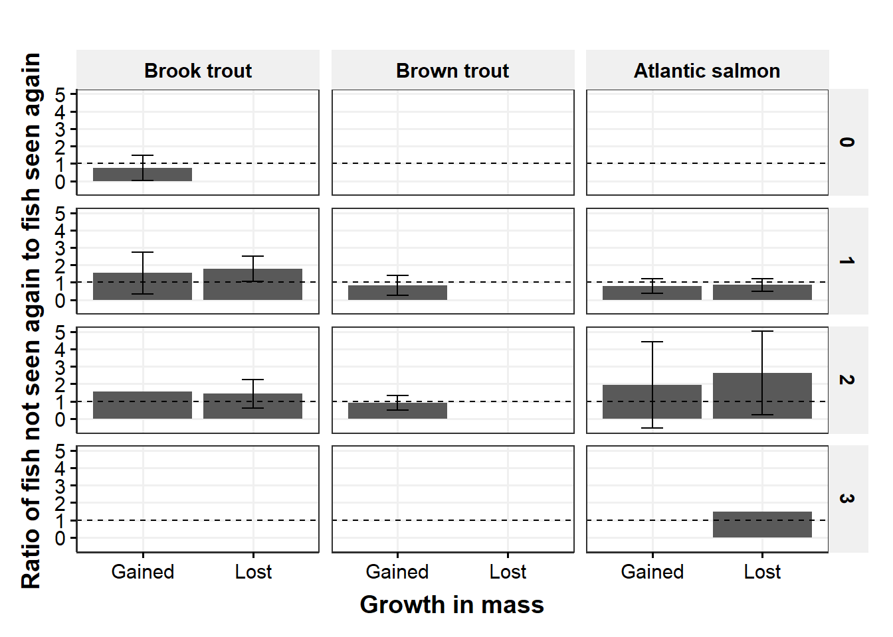
Code
ggplot(negGr_seenNotSeenYearAgeCD_wide |>filter(!is.na(negGrowth), speciesGG =="Atlantic salmon", seasonGG =="Autumn"), aes(year, `FALSE`, color = negGrowth)) +geom_point(size =5) +geom_line() +geom_point(aes(year, `TRUE`, color = negGrowth), shape =2, size =5) +geom_line(aes(year, `TRUE`, color = negGrowth)) +scale_y_continuous("Number of fish") +scale_x_continuous("Year") +theme_publication(base_size =14) +ggtitle("Atlantic salmon", subtitle ="Number of salmon seen again (triangle) and number of fish not seen again (filled circle) in autumn") +facet_grid(age~riverGG)
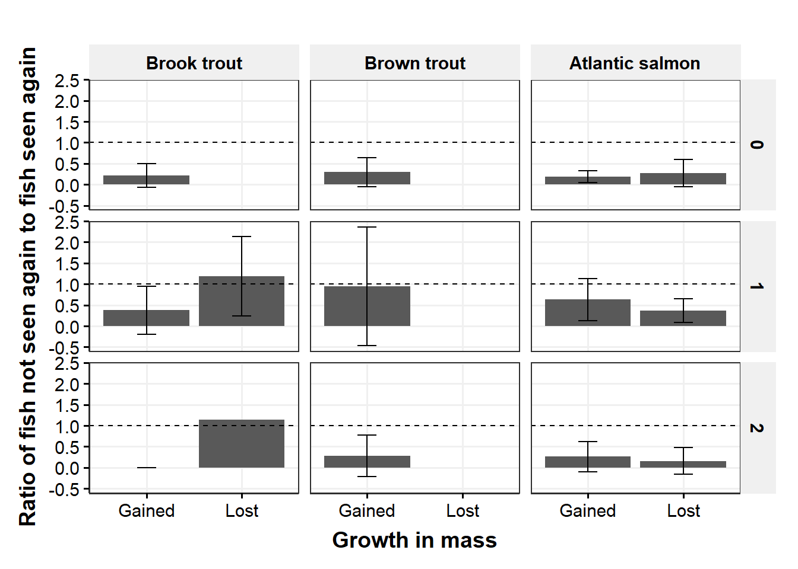
Code
############# meansnegGr_seenNotSeenYearAgeCD_wideMeans <- negGr_seenNotSeenYearAgeCD_wide |>filter(is.finite(ratio)) |>group_by(speciesGG, riverGG, seasonGG, age, negGrowth) |>summarize(meanFalse =mean(`FALSE`),meanTrue =mean(`TRUE`),meanRatio =mean(ratio),sdRatio =sd(ratio),n =n() ) |>mutate(ymax = meanRatio + sdRatio,ymin = meanRatio - sdRatio,gainedLost =ifelse(negGrowth, "Lost", "Gained") ) ggplot(negGr_seenNotSeenYearAgeCD_wideMeans |>filter(seasonGG =="Summer", riverGG =="West Brook", age %in%c(1,2)), aes(gainedLost, meanRatio)) +geom_col(position ="dodge") +geom_errorbar(aes(ymin = ymin, ymax = ymax), position =position_dodge(0.9), width =0.2) +geom_hline(yintercept =1, linetype ="dashed") +labs(y ="Ratio of fish not seen again to fish seen again", x ="Growth in mass") +#ggtitle("Brook trout, summer") +theme_publication() +facet_grid(age~speciesGG)
Code
ggplot(negGr_seenNotSeenYearAgeCD_wideMeans |>filter(speciesGG =="Brook trout", seasonGG =="Summer", age %in%c(1,2)), aes(gainedLost, meanRatio)) +geom_col(position ="dodge") +geom_errorbar(aes(ymin = ymin, ymax = ymax), position =position_dodge(0.9), width =0.2) +geom_hline(yintercept =1, linetype ="dashed") +labs(y ="Ratio of fish not seen again to fish seen again", x ="Growth in mass") +#ggtitle("Brook trout, summer") +theme_publication() +facet_grid(age~riverGG)
Code
ggplot(negGr_seenNotSeenYearAgeCD_wideMeans |>filter(seasonGG =="Autumn", riverGG =="West Brook"), aes(gainedLost, meanRatio)) +geom_col(position ="dodge") +geom_errorbar(aes(ymin = ymin, ymax = ymax), position =position_dodge(0.9), width =0.2) +geom_hline(yintercept =1, linetype ="dashed") +labs(y ="Ratio of fish not seen again to fish seen again", x ="Growth in mass") +#ggtitle("Brook trout, autumn") +theme_publication() +facet_grid(age~speciesGG)
Code
ggplot(negGr_seenNotSeenYearAgeCD_wideMeans |>filter(seasonGG %in%c("Summer","Autumn"), riverGG =="West Brook", age <3), aes(gainedLost, meanRatio, fill =factor(age), color =factor(age))) +geom_col(position ="dodge") +geom_errorbar(aes(ymin = ymin, ymax = ymax), position =position_dodge(0.9), width =0.2) +geom_hline(yintercept =1, linetype ="dashed") +#labs(y = "Ratio of fish not seen again to fish seen again", x = "Growth in mass") +labs(y ="Number of fish not seen again / number of fish seen again", x ="Growth in mass") +#ggtitle("Brook trout, autumn") +theme_publication(base_size =18) +facet_grid(seasonGG ~ speciesGG + age)
Code
###### ggplot(negGr_seenNotSeenYearAgeCD_wideMeans |> filter(speciesGG == "Brook trout"), aes(gainedLost, meanRatio, fill = age)) +# geom_col(position = "dodge") +# geom_errorbar(aes(ymin = ymin, ymax = ymax), position = position_dodge(0.9), width = 0.2) +# geom_hline(yintercept = 1, linetype = "dashed") +# #labs(y = "Ratio of fish not seen again to fish seen again", x = "Growth in mass") +# labs(y = "Number of fish not seen again / number of fish seen again", x = "Growth in mass") +# #ggtitle("Brook trout") +# theme_publication(base_size = 18) + # facet_grid(seasonGG~riverGG + age)# ggplot(negGr_seenNotSeenYearAgeCD_wideMeans |> filter(speciesGG == "Brown trout"), aes(gainedLost, meanRatio, fill = age)) +# geom_col(position = "dodge") +# geom_errorbar(aes(ymin = ymin, ymax = ymax), position = position_dodge(0.9), width = 0.2) +# geom_hline(yintercept = 1, linetype = "dashed") +# #labs(y = "Ratio of fish not seen again to fish seen again", x = "Growth in mass") +# labs(y = "Number of fish not seen again / number of fish seen again", x = "Growth in mass") +# #ggtitle("Brook trout") +# theme_publication(base_size = 18) + # facet_grid(seasonGG~riverGG + age)
18.11.2 Pos/neg growth and emigration
Does not look like fish that lost mass were more likely to emigrate.
ggplot(negGr_beforeLastMean_year |>filter(n >2, year >2001, year <2015, speciesGG =="Brook trout", seasonGG !="Spring"), aes(meanGR, meanSamplesBeforeLast)) +geom_point(aes(color = riverGG, shape = riverGG)) +geom_line(aes(shape = riverGG, color = riverGG)) +#geom_smooth(method = "lm", se = FALSE) +theme_publication() +facet_grid(seasonGG ~ year, scales ="free")
Split data by samplesBeforeLast = 1 and samplesBeforeLast > 1.
The graph shows mean growth for fish that were caught for the last time in the next sample or at some later sample
Relationship between individual growth and length of subsequent observations (how many more observations before the last observation) for individual fish.
modSummer <- (lm(distMoved ~ negGrowth * species, data = cd1 |>filter(seasonGG =="Summer", !is.na(negGrowth))))#summary(modSummer)#anova(modSummer)lmerSummer <-lmer(distMoved ~ negGrowth * species + (1| year), data = cd1 |>filter(seasonGG =="Summer", !is.na(negGrowth), year>=2000, year <=2015))summary(lmerSummer)
Linear mixed model fit by REML ['lmerMod']
Formula: distMoved ~ negGrowth * species + (1 | year)
Data: filter(cd1, seasonGG == "Summer", !is.na(negGrowth), year >=
2000, year <= 2015)
REML criterion at convergence: 49945.6
Scaled residuals:
Min 1Q Median 3Q Max
-12.9172 -0.0071 0.0435 0.1203 12.0505
Random effects:
Groups Name Variance Std.Dev.
year (Intercept) 0.617 0.7855
Residual 85.907 9.2686
Number of obs: 6848, groups: year, 16
Fixed effects:
Estimate Std. Error t value
(Intercept) 0.1837 0.3807 0.483
negGrowthTRUE -0.1373 0.4202 -0.327
speciesbkt -1.1694 0.3780 -3.094
speciesbnt -1.1149 0.4173 -2.672
negGrowthTRUE:speciesbkt 0.9645 0.5670 1.701
negGrowthTRUE:speciesbnt 0.6261 1.0221 0.613
Correlation of Fixed Effects:
(Intr) ngGTRUE spcsbk spcsbn ngGrwthTRUE:spcsbk
ngGrwthTRUE -0.574
speciesbkt -0.738 0.589
speciesbnt -0.667 0.532 0.676
ngGrwthTRUE:spcsbk 0.439 -0.739 -0.616 -0.402
ngGrwthTRUE:spcsbn 0.226 -0.403 -0.238 -0.365 0.310
Code
anova(lmerSummer)
Analysis of Variance Table
npar Sum Sq Mean Sq F value
negGrowth 1 506.87 506.87 5.9002
species 2 640.09 320.04 3.7255
negGrowth:species 2 249.29 124.65 1.4509
# Autumn# modAutumn <- (lm(distMoved ~ negGrowth * species, data = cd1 |>filter(seasonGG =="Autumn", !is.na(negGrowth), year >=2000, year <=2015)))#summary(modAutumn)#anova(modAutumn)lmerAutumn <-lmer(distMoved ~ negGrowth * species + (1| year), data = cd1 |>filter(seasonGG =="Autumn", !is.na(negGrowth), year >=2000, year <=2015))summary(lmerAutumn)
Linear mixed model fit by REML ['lmerMod']
Formula: distMoved ~ negGrowth * species + (1 | year)
Data: filter(cd1, seasonGG == "Autumn", !is.na(negGrowth), year >=
2000, year <= 2015)
REML criterion at convergence: 38588.5
Scaled residuals:
Min 1Q Median 3Q Max
-13.1547 -0.0886 -0.0001 0.1014 12.2230
Random effects:
Groups Name Variance Std.Dev.
year (Intercept) 0.3835 0.6193
Residual 81.1826 9.0101
Number of obs: 5333, groups: year, 16
Fixed effects:
Estimate Std. Error t value
(Intercept) 1.0609 0.3884 2.732
negGrowthTRUE -0.5096 0.7269 -0.701
speciesbkt -2.0367 0.4110 -4.956
speciesbnt -0.7972 0.4235 -1.883
negGrowthTRUE:speciesbkt 2.1691 0.8649 2.508
negGrowthTRUE:speciesbnt 1.6599 1.2524 1.325
Correlation of Fixed Effects:
(Intr) ngGTRUE spcsbk spcsbn ngGrwthTRUE:spcsbk
ngGrwthTRUE -0.312
speciesbkt -0.799 0.295
speciesbnt -0.734 0.289 0.720
ngGrwthTRUE:spcsbk 0.263 -0.841 -0.352 -0.244
ngGrwthTRUE:spcsbn 0.183 -0.580 -0.170 -0.277 0.487
Code
anova(lmerAutumn)
Analysis of Variance Table
npar Sum Sq Mean Sq F value
negGrowth 1 502.32 502.32 6.1875
species 2 2058.71 1029.36 12.6795
negGrowth:species 2 511.78 255.89 3.1520
[12:45:56] WARNING: src/learner.cc:553:
If you are loading a serialized model (like pickle in Python, RDS in R) generated by
older XGBoost, please export the model by calling `Booster.save_model` from that version
first, then load it back in current version. See:
https://xgboost.readthedocs.io/en/latest/tutorials/saving_model.html
for more details about differences between saving model and serializing.
####################################################################s_negGrowthBKT <-hstats(negGrowthBKT$xgb, v = negGrowthBKT$new_vars, X = negGrowthBKT$features_train)
### Interaction plots ##################################################################plot(partial_dep(negGrowthBKT$xgb, v ="meanTemperature", X = negGrowthBKT$features_train, BY ="meanFlowByRiver")) +geom_smooth(aes(color = meanFlowByRiver), se =FALSE)
Code
plot(partial_dep(negGrowthBKT$xgb, v ="meanFlowByRiver", X = negGrowthBKT$features_train, BY ="meanTemperature")) +geom_smooth(aes(color = meanTemperature), se =FALSE)
Code
plot(partial_dep(negGrowthBKT$xgb, v ="meanFlowByRiver", X = negGrowthBKT$features_train, BY =c("nInd"))) +geom_smooth(aes(color = nInd), se =FALSE)
[16:35:40] WARNING: src/learner.cc:553:
If you are loading a serialized model (like pickle in Python, RDS in R) generated by
older XGBoost, please export the model by calling `Booster.save_model` from that version
first, then load it back in current version. See:
https://xgboost.readthedocs.io/en/latest/tutorials/saving_model.html
for more details about differences between saving model and serializing.
####################################################################s_negGrowthBNT <-hstats(negGrowthBNT$xgb, v = negGrowthBNT$new_vars, X = negGrowthBNT$features_train)
### Interaction plots ##################################################################plot(partial_dep(negGrowthBNT$xgb, v ="meanTemperature", X = negGrowthBNT$features_train, BY ="meanFlowByRiver")) +geom_smooth(aes(color = meanFlowByRiver), se =FALSE)
Code
plot(partial_dep(negGrowthBNT$xgb, v ="meanFlowByRiver", X = negGrowthBNT$features_train, BY ="meanTemperature")) +geom_smooth(aes(color = meanTemperature), se =FALSE)
Code
plot(partial_dep(negGrowthBNT$xgb, v ="meanFlowByRiver", X = negGrowthBNT$features_train, BY =c("nInd"))) +geom_smooth(aes(color = nInd), se =FALSE)
[16:37:00] WARNING: src/learner.cc:553:
If you are loading a serialized model (like pickle in Python, RDS in R) generated by
older XGBoost, please export the model by calling `Booster.save_model` from that version
first, then load it back in current version. See:
https://xgboost.readthedocs.io/en/latest/tutorials/saving_model.html
for more details about differences between saving model and serializing.
####################################################################s_negGrowthATS <-hstats(negGrowthATS$xgb, v = negGrowthATS$new_vars, X = negGrowthATS$features_train)
### Interaction plots ##################################################################plot(partial_dep(negGrowthATS$xgb, v ="meanTemperature", X = negGrowthATS$features_train, BY ="meanFlowByRiver")) +geom_smooth(aes(color = meanFlowByRiver), se =FALSE)
Code
plot(partial_dep(negGrowthATS$xgb, v ="meanFlowByRiver", X = negGrowthATS$features_train, BY ="meanTemperature")) +geom_smooth(aes(color = meanTemperature), se =FALSE)
Code
plot(partial_dep(negGrowthATS$xgb, v ="meanFlowByRiver", X = negGrowthATS$features_train, BY =c("nInd"))) +geom_smooth(aes(color = nInd), se =FALSE)
# plot error vs number treesggplot(xgb.fit1_W$evaluation_log) +geom_line(aes(iter, train_rmse_mean), color ="red") +geom_line(aes(iter, test_rmse_mean), color ="blue")
[18:15:28] WARNING: src/learner.cc:553:
If you are loading a serialized model (like pickle in Python, RDS in R) generated by
older XGBoost, please export the model by calling `Booster.save_model` from that version
first, then load it back in current version. See:
https://xgboost.readthedocs.io/en/latest/tutorials/saving_model.html
for more details about differences between saving model and serializing.
[18:16:07] WARNING: src/learner.cc:553:
If you are loading a serialized model (like pickle in Python, RDS in R) generated by
older XGBoost, please export the model by calling `Booster.save_model` from that version
first, then load it back in current version. See:
https://xgboost.readthedocs.io/en/latest/tutorials/saving_model.html
for more details about differences between saving model and serializing.
[18:16:58] WARNING: src/learner.cc:553:
If you are loading a serialized model (like pickle in Python, RDS in R) generated by
older XGBoost, please export the model by calling `Booster.save_model` from that version
first, then load it back in current version. See:
https://xgboost.readthedocs.io/en/latest/tutorials/saving_model.html
for more details about differences between saving model and serializing.
[18:17:51] WARNING: src/learner.cc:553:
If you are loading a serialized model (like pickle in Python, RDS in R) generated by
older XGBoost, please export the model by calling `Booster.save_model` from that version
first, then load it back in current version. See:
https://xgboost.readthedocs.io/en/latest/tutorials/saving_model.html
for more details about differences between saving model and serializing.
[18:18:36] WARNING: src/learner.cc:553:
If you are loading a serialized model (like pickle in Python, RDS in R) generated by
older XGBoost, please export the model by calling `Booster.save_model` from that version
first, then load it back in current version. See:
https://xgboost.readthedocs.io/en/latest/tutorials/saving_model.html
for more details about differences between saving model and serializing.
[18:19:17] WARNING: src/learner.cc:553:
If you are loading a serialized model (like pickle in Python, RDS in R) generated by
older XGBoost, please export the model by calling `Booster.save_model` from that version
first, then load it back in current version. See:
https://xgboost.readthedocs.io/en/latest/tutorials/saving_model.html
for more details about differences between saving model and serializing.
# get a few observations to perform local interpretation onlocal_obs_W <- dML_W[1:3, ]# one-hot encode the local observations to be assessed.local_obs_onehot_W <- vtreat::prepare(treatplan_W, local_obs_W, varRestriction = new_vars_W)# apply LIMEexplainer_W <-lime(data.frame(features_train_W), finalModels_W$xgb[[modelToUse]], quantile_bins =FALSE)explanation_W <- lime::explain(local_obs_onehot_W, explainer_W, n_features =5, n_labels =2)plot_features(explanation_W)
18.14.2 Raw data with logistic fit for flow effect
Code
ggplot(cd1_z |>filter(!is.na(negGrowth)), aes(meanFlowByRiverZ, negGrowth *1, color = river)) +geom_point(alpha =0.1) +geom_smooth(method ="glm", method.args =list(family ="binomial"),se =FALSE) +labs(y ="Probability of negative growth in mass", x ="Mean flow") +theme_publication() +facet_grid(seasonGG~speciesGG)
Code
ggplot(cd1_z |>filter(!is.na(negGrowth)), aes(meanFlowByRiverZ, negGrowth *1, color = riverGG)) +geom_point(alpha =0.1) +geom_smooth(method ="glm", method.args =list(family ="binomial"),se =FALSE) +labs(y ="Probability of negative growth in mass", x ="Mean flow") +theme_publication() +facet_grid(seasonGG ~ speciesGG + riverGG)
Code
# ggplot(cd1_z |> filter(!is.na(negGrowth)), aes(meanFlowByRiverZbySeason, negGrowth * 1, color = riverGG)) +# geom_point(alpha = 0.1) +# geom_smooth(method = "glm", # method.args = list(family = "binomial"),# se = FALSE) +# labs(y = "Probability of negative growth in mass", x = "Mean flow (scaled by season)") +# theme_publication() + # facet_grid(seasonGG ~ speciesGG + riverGG)
18.14.3 Raw data with logistic fit for temperature effect
Code
ggplot(cd1_z |>filter(!is.na(negGrowth), meanTempZbySeason >-4), aes(meanTempZbySeason, negGrowth *1, color = riverGG)) +geom_point(alpha =0.1) +geom_smooth(method ="glm", method.args =list(family ="binomial"),se =FALSE) +labs(y ="Probability of negative growth in mass", x ="Mean temperature (scaled by season)") +theme_publication() +facet_grid(seasonGG ~ speciesGG)
18.14.4 Raw data with logistic fit for observedWeight effect
Code
ggplot(cd1_z |>filter(!is.na(negGrowth), meanTempZbySeason >-4), aes(observedWeightZ, negGrowth *1, color = riverGG)) +geom_point(alpha =0.1) +geom_smooth(method ="glm", method.args =list(family ="binomial"),se =FALSE) +labs(y ="Probability of negative growth in mass", x ="Mass (mg, scaled by species and river)") +theme_publication() +facet_grid(seasonGG ~ speciesGG)
18.15 Logistic model for flow and temperature, one species at a time
Species occupy different rivers, so an all-species model will have unequal river representation across species and don’t need to predict where species are not.
Need to think through whether these models make sense…
In the figures with the shading, the shading is the range of effects from number of individuals, with the darker line on one edge of the shaded area representing high numbers of individuals.
ggplot(predATS$pred |>filter(meanTempZbySeason %in%c(-1.5,0,1.5), meanFlowByRiverZbySeason %in%c(-1.5,0,1.5), nIndZ ==0, nIndBySpeciesZ ==0, season >1), aes(observedWeightZ, pred, group = groupF)) +geom_line(aes(color =factor(meanFlowByRiverZbySeason))) +labs(y ="Probability of negative growth in mass", x ="Body mass (mg)") +theme_publication() +facet_grid(seasonGG ~ riverGG + meanTempZbySeason)
Code
ggplot(predATS$pred |>filter(meanTempZbySeason ==0, meanFlowByRiverZbySeason %in%c(-1.5,0,1.5), nIndZ ==0, nIndBySpeciesZ ==0, season >1), aes(observedWeightZ, pred, group = groupF)) +geom_line(aes(color =factor(meanFlowByRiverZbySeason))) +labs(y ="Probability of negative growth in mass", x ="Body mass (mg)") +theme_publication() +facet_grid(seasonGG ~ riverGG)
Code
ggplot(predATS$pred |>filter(meanTempZbySeason %in%c(-1.5,0,1.5), observedWeightZ ==0, nIndZ ==0, nIndBySpeciesZ ==0, season >1), aes(meanFlowByRiverZbySeason, pred, group = groupTM)) +geom_line(aes(color =factor(meanTempZbySeason))) +#, linetype = factor(observedWeightZ))) +labs(y ="Probability of negative growth in mass", x ="Stream flow") +theme_publication() +facet_grid(seasonGG ~ riverGG)
Code
predATSWider <- predATS$pred |>filter(nIndZ %in%c(-1.5, 0, 1.5)) |> dplyr::select(-groupFN) |>pivot_wider(values_from = pred, names_from = nIndZ, names_prefix ="nIndZ")tempColors <-c("lightblue", "grey", "red")ggplot(predATSWider |>filter(meanTempZbySeason %in%c(-1.5,0,1.5), observedWeightZ ==-1.5, nIndBySpeciesZ ==0, season >1, riverGG =="West Brook"), aes(meanFlowByRiverZbySeason, nIndZ0, group = groupTM)) +geom_line(aes(color =factor(meanTempZbySeason)), linewidth =1) +#, linetype = factor(observedWeightZ))) +#geom_line(aes(meanFlowByRiverZbySeason, `nIndZ-1.5`, color = factor(meanTempZbySeason)), alpha = 0.5, linetype = 2, linewidth = 0.75) +geom_line(aes(meanFlowByRiverZbySeason, nIndZ1.5, color =factor(meanTempZbySeason)), alpha =0.33, linewidth =0.75) +geom_ribbon(aes(meanFlowByRiverZbySeason, ymin =`nIndZ-1.5`, max = nIndZ1.5, fill =factor(meanTempZbySeason)), alpha =0.3) +scale_color_manual(values = tempColors) +scale_fill_manual(values = tempColors) +labs(y ="Probability of negative growth in mass", x ="Stream flow", title ="Small fish") +theme_publication() +facet_grid(seasonGG ~ riverGG)
Code
ggplot(predATSWider |>filter(meanTempZbySeason %in%c(-1.5,0,1.5), observedWeightZ ==0, nIndBySpeciesZ ==0, season >1, riverGG =="West Brook"), aes(meanFlowByRiverZbySeason, nIndZ0, group = groupTM)) +geom_line(aes(color =factor(meanTempZbySeason)), linewidth =1) +#, linetype = factor(observedWeightZ))) +#geom_line(aes(meanFlowByRiverZbySeason, `nIndZ-1.5`, color = factor(meanTempZbySeason)), alpha = 0.5, linetype = 2, linewidth = 0.75) +geom_line(aes(meanFlowByRiverZbySeason, nIndZ1.5, color =factor(meanTempZbySeason)), alpha =0.33, linewidth =0.75) +geom_ribbon(aes(meanFlowByRiverZbySeason, ymin =`nIndZ-1.5`, max = nIndZ1.5, fill =factor(meanTempZbySeason)), alpha =0.3) +scale_color_manual(values = tempColors) +scale_fill_manual(values = tempColors) +labs(y ="Probability of negative growth in mass", x ="Stream flow", title ="Medium fish") +theme_publication() +facet_grid(seasonGG ~ riverGG)
Code
ggplot(predATSWider |>filter(meanTempZbySeason %in%c(-1.5,0,1.5), observedWeightZ ==1.5, nIndBySpeciesZ ==0, season >1, riverGG =="West Brook"), aes(meanFlowByRiverZbySeason, nIndZ0, group = groupTM)) +geom_line(aes(color =factor(meanTempZbySeason)), linewidth =1) +#, linetype = factor(observedWeightZ))) +#geom_line(aes(meanFlowByRiverZbySeason, `nIndZ-1.5`, color = factor(meanTempZbySeason)), alpha = 0.5, linetype = 2, linewidth = 0.75) +geom_line(aes(meanFlowByRiverZbySeason, nIndZ1.5, color =factor(meanTempZbySeason)), alpha =0.33, linewidth =0.75) +geom_ribbon(aes(meanFlowByRiverZbySeason, ymin =`nIndZ-1.5`, max = nIndZ1.5, fill =factor(meanTempZbySeason)), alpha =0.3) +scale_color_manual(values = tempColors) +scale_fill_manual(values = tempColors) +labs(y ="Probability of negative growth in mass", x ="Stream flow", title ="Large fish") +theme_publication() +facet_grid(seasonGG ~ riverGG)
18.16 Two growth models
18.16.1 Size-adjusted growth model
18.16.1.1 Get l-w relationships for size-adjusted growth model
Here, we will explore size-independent growth in mass, see Sigourney, D. B., B H Letcher, M. Obedzinski, and R. A. Cunjak. “Size-Independent Growth in Fishes: Patterns, Models and Metrics.” Journal of Fish Biology 72, no. 10 (2008): 2435–55. https://doi.org/10.1111/j.1095-8649.2008.01830.x. Size-independent growth (grWeightS) is calculated in getDataElectro_targets.R file using addSizeIndGrowthWeight(). grWeightS uses the slope of log(observedWeight) ~ log(grWeight) for each river and season and species to adjust growth.
A simple linear models shows we need to get separate slopes for each river and season and species.
Code
ggplot(cd1 |>filter(grWeight >0), aes(log(observedWeight), log(grWeight), color = riverGG)) +geom_point(alpha =0.05) +geom_smooth(method ="lm", se =FALSE) +labs(y ="Log of mass (mg)", x ="Log of growth in mass") +scale_color_discrete() +theme_publication() +facet_grid(seasonGG~speciesGG)
Code
mod0 <-lm(log(grWeight) ~log(observedWeight), data = cd1 |>filter(grWeight >0))mod1 <-lm(log(grWeight) ~log(observedWeight) * river, data = cd1 |>filter(grWeight >0))mod2 <-lm(log(grWeight) ~log(observedWeight) * river *factor(season), data = cd1 |>filter(grWeight >0))mod3 <-lm(log(grWeight) ~log(observedWeight) *factor(season), data = cd1 |>filter(grWeight >0))mod4 <-lm(log(grWeight) ~log(observedWeight) * river *factor(season) * species, data = cd1 |>filter(grWeight >0))AIC(mod0,mod1,mod2,mod3,mod4) |>arrange(AIC)